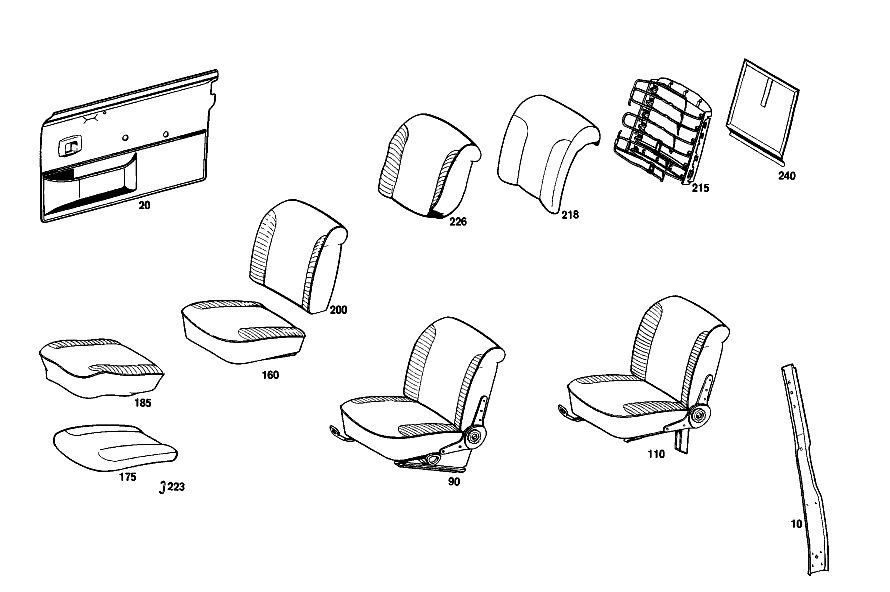

| № | Артикул | Название | Кол. | Примечание | Ограничение |
|---|---|---|---|---|---|
| 10 | A 000 983 66 86 | ИСКУССТВ. КОЖА | 1 | 240X1050 MM CENTRAL PILLAR COVERING Z 55.810/02, Z 55.810/03 [001] STATE COLOR NUMBER WHEN ORDERING,AND PLEASE STATE WHETHER FRONT SEAT BACKREST SHOULD BE MADE READY FOR INSTALLATION OF HEADREST [404] ЗАКАЗЫВАТЬ ПОГОННЫМИ МЕТРАМИ | |
| 13 | A 109 690 07 49 | Обшивка | 1 | Z 55.810/01, Z 55.810/03 [001] STATE COLOR NUMBER WHEN ORDERING,AND PLEASE STATE WHETHER FRONT SEAT BACKREST SHOULD BE MADE READY FOR INSTALLATION OF HEADREST | |
| 20 | A 109 720 76 70 | Обшивка | 1 | ДВЕРЬ ВОДИТЕЛЯ СПРАВА Рулевое управление: Влево Z 55.810/01 [001] STATE COLOR NUMBER WHEN ORDERING,AND PLEASE STATE WHETHER FRONT SEAT BACKREST SHOULD BE MADE READY FOR INSTALLATION OF HEADREST [035] ONLY INSTALLED ON 109.015 [004] FROM CHASSIS: 109.015 002120 | |
| 70 | A 109 730 40 70 | Обшивка | 1 | ЗАДНЯЯ ПРАВАЯ ДВЕРЬ Z 55.810/01 [001] STATE COLOR NUMBER WHEN ORDERING,AND PLEASE STATE WHETHER FRONT SEAT BACKREST SHOULD BE MADE READY FOR INSTALLATION OF HEADREST [021] FROM CHASSIS: 109.016 001859 109.018 002020 [022] ONLY INSTALLED ON 109.016,018,056,057 [006] ENCLOSE SAMPLE OF VENEER WHEN ORDERING | |
| 90 | A 109 910 97 01 | СИДЕНЬЕ ВОДИТЕЛЯ | 1 | СЛЕВА, С РЕГУЛИР. ВЫСОТЫ Рулевое управление: Влево Z 55.810/01 [001] STATE COLOR NUMBER WHEN ORDERING,AND PLEASE STATE WHETHER FRONT SEAT BACKREST SHOULD BE MADE READY FOR INSTALLATION OF HEADREST [035] ONLY INSTALLED ON 109.015 [402] БОЛЬШЕ НЕ ПОСТАВЛЯЕТСЯ [009] UP TO CHASSIS: 109.015 002130 | |
| 95 | A 109 910 67 12 | СИДЕНЬЕ ВОДИТЕЛЯ | 1 | СЛЕВА, С РЕГУЛИР. ВЫСОТЫ Рулевое управление: Влево Z 55.810/01 [001] STATE COLOR NUMBER WHEN ORDERING,AND PLEASE STATE WHETHER FRONT SEAT BACKREST SHOULD BE MADE READY FOR INSTALLATION OF HEADREST [402] БОЛЬШЕ НЕ ПОСТАВЛЯЕТСЯ [029] FROM CHASSIS: 109.016 002411 109.018 002233 109.056 000023 [036] UP TO CHASSIS: 109.057 000668 | |
| 110 | A 109 910 19 09 | СИДЕНЬЕ ВОДИТЕЛЯ | 1 | СЛЕВА,БЕЗ РЕГУЛИРОВКИ ВЫСОТЫ Рулевое управление: Вправо Z 55.810/01 [001] STATE COLOR NUMBER WHEN ORDERING,AND PLEASE STATE WHETHER FRONT SEAT BACKREST SHOULD BE MADE READY FOR INSTALLATION OF HEADREST [402] БОЛЬШЕ НЕ ПОСТАВЛЯЕТСЯ [010] FROM CHASSIS: 109.015 002131 [025] UP TO CHASSIS: 109.015 UNTIL PRODUCTION STOP 109.016 000924 109.018 000263 | |
| 120 | A 109 910 70 12 | СИДЕНЬЕ ВОДИТЕЛЯ | 1 | СПРАВА,БЕЗ РЕГУЛИР.ВЫСОТЫ Рулевое управление: Влево Z 55.810/01 [001] STATE COLOR NUMBER WHEN ORDERING,AND PLEASE STATE WHETHER FRONT SEAT BACKREST SHOULD BE MADE READY FOR INSTALLATION OF HEADREST [402] БОЛЬШЕ НЕ ПОСТАВЛЯЕТСЯ [029] FROM CHASSIS: 109.016 002411 109.018 002233 109.056 000023 | |
| 160 | A 109 910 01 30 | - ПОДУШКА СИДЕНЬЯ | 2 | Z 55.810/01 [001] STATE COLOR NUMBER WHEN ORDERING,AND PLEASE STATE WHETHER FRONT SEAT BACKREST SHOULD BE MADE READY FOR INSTALLATION OF HEADREST [402] БОЛЬШЕ НЕ ПОСТАВЛЯЕТСЯ [028] UP TO CHASSIS: 109.016 002410 109.018 002232 109.056 000022 | |
| 165 | A 109 910 14 30 | - ПОДУШКА СИДЕНЬЯ | 2 | Z 55.810/01 [001] STATE COLOR NUMBER WHEN ORDERING,AND PLEASE STATE WHETHER FRONT SEAT BACKREST SHOULD BE MADE READY FOR INSTALLATION OF HEADREST [402] БОЛЬШЕ НЕ ПОСТАВЛЯЕТСЯ [029] FROM CHASSIS: 109.016 002411 109.018 002233 109.056 000023 [036] UP TO CHASSIS: 109.057 000668 | |
| 175 | A 110 914 07 14 | - НАКЛАДКА | - | Z 55.810/01, Z 55.810/02, Z 55.810/03 | |
| 185 | A 109 910 03 46 | - ОБИВКА | 2 | Z 55.810/01 [001] STATE COLOR NUMBER WHEN ORDERING,AND PLEASE STATE WHETHER FRONT SEAT BACKREST SHOULD BE MADE READY FOR INSTALLATION OF HEADREST [402] БОЛЬШЕ НЕ ПОСТАВЛЯЕТСЯ [028] UP TO CHASSIS: 109.016 002410 109.018 002232 109.056 000022 | |
| 188 | A 109 910 51 46 | - ОБИВКА | 2 | Z 55.810/01 [001] STATE COLOR NUMBER WHEN ORDERING,AND PLEASE STATE WHETHER FRONT SEAT BACKREST SHOULD BE MADE READY FOR INSTALLATION OF HEADREST [402] БОЛЬШЕ НЕ ПОСТАВЛЯЕТСЯ [029] FROM CHASSIS: 109.016 002411 109.018 002233 109.056 000023 | |
| 200 | A 109 910 29 32 | - СПИНКА СИДЕНЬЯ | 2 | Z 55.810/01 [001] STATE COLOR NUMBER WHEN ORDERING,AND PLEASE STATE WHETHER FRONT SEAT BACKREST SHOULD BE MADE READY FOR INSTALLATION OF HEADREST [010] FROM CHASSIS: 109.015 002131 [028] UP TO CHASSIS: 109.016 002410 109.018 002232 109.056 000022 | |
| 205 | A 109 910 40 32 | - СПИНКА СИДЕНЬЯ | 2 | Z 55.810/01 [001] STATE COLOR NUMBER WHEN ORDERING,AND PLEASE STATE WHETHER FRONT SEAT BACKREST SHOULD BE MADE READY FOR INSTALLATION OF HEADREST [402] БОЛЬШЕ НЕ ПОСТАВЛЯЕТСЯ [029] FROM CHASSIS: 109.016 002411 109.018 002233 109.056 000023 | |
| 215 | A 109 910 20 34 | - РАМА СПИНКИ | 2 | Z 55.810/01, Z 55.810/02, Z 55.810/03 | |
| 218 | A 109 914 05 16 | - НАКЛАДКА | 2 | Z 55.810/01, Z 55.810/02, Z 55.810/03 [037] INAPPLICABLE TO U.S. VEHICLES | |
| 223 | A 000 984 20 61 | - Скоба | 8 | Z 55.810/01, Z 55.810/02, Z 55.810/03 | |
| 226 | A 109 910 39 47 | - ОБИВКА | 2 | Z 55.810/01 [001] STATE COLOR NUMBER WHEN ORDERING,AND PLEASE STATE WHETHER FRONT SEAT BACKREST SHOULD BE MADE READY FOR INSTALLATION OF HEADREST [402] БОЛЬШЕ НЕ ПОСТАВЛЯЕТСЯ [028] UP TO CHASSIS: 109.016 002410 109.018 002232 109.056 000022 | |
| 230 | A 109 910 63 47 | - ОБИВКА | 2 | Z 55.810/01 [001] STATE COLOR NUMBER WHEN ORDERING,AND PLEASE STATE WHETHER FRONT SEAT BACKREST SHOULD BE MADE READY FOR INSTALLATION OF HEADREST [402] БОЛЬШЕ НЕ ПОСТАВЛЯЕТСЯ [029] FROM CHASSIS: 109.016 002411 109.018 002233 109.056 000023 | |
| 240 | A 109 910 01 39 | - Обшивка | 2 | Z 55.810/01 [001] STATE COLOR NUMBER WHEN ORDERING,AND PLEASE STATE WHETHER FRONT SEAT BACKREST SHOULD BE MADE READY FOR INSTALLATION OF HEADREST [035] ONLY INSTALLED ON 109.015 [009] UP TO CHASSIS: 109.015 002130 | |
| 265 | A 109 920 08 20 | ПОДУШКИ ЗАДНИХ СИДЕНИЙ | 1 | Z 55.810/01 [001] STATE COLOR NUMBER WHEN ORDERING,AND PLEASE STATE WHETHER FRONT SEAT BACKREST SHOULD BE MADE READY FOR INSTALLATION OF HEADREST [402] БОЛЬШЕ НЕ ПОСТАВЛЯЕТСЯ [028] UP TO CHASSIS: 109.016 002410 109.018 002232 109.056 000022 | |
| 268 | A 109 920 12 20 | ПОДУШКИ ЗАДНИХ СИДЕНИЙ | - | Z 55.810/01 | |
| 276 | A 110 924 09 14 | - НАКЛАДКА | - | Z 55.810/01, Z 55.810/02, Z 55.810/03 | |
| 285 | A 109 920 03 46 | - ОБИВКА | 1 | Z 55.810/01 [001] STATE COLOR NUMBER WHEN ORDERING,AND PLEASE STATE WHETHER FRONT SEAT BACKREST SHOULD BE MADE READY FOR INSTALLATION OF HEADREST [035] ONLY INSTALLED ON 109.015 [402] БОЛЬШЕ НЕ ПОСТАВЛЯЕТСЯ [016] UP TO CHASSIS: 109.015 002151 | |
| 289 | A 109 920 37 46 | - ОБИВКА | 1 | Z 55.810/01 [001] STATE COLOR NUMBER WHEN ORDERING,AND PLEASE STATE WHETHER FRONT SEAT BACKREST SHOULD BE MADE READY FOR INSTALLATION OF HEADREST [402] БОЛЬШЕ НЕ ПОСТАВЛЯЕТСЯ [029] FROM CHASSIS: 109.016 002411 109.018 002233 109.056 000023 | |
| 297 | A 000 984 20 61 | - Скоба | 50 | Z 55.810/01, Z 55.810/02, Z 55.810/03 [012] FROM CHASSIS: 109.015 001670 | |
| 300 | A 109 920 02 30 | СПИНКА СИДЕНЬЯ | 1 | Z 55.810/01 [001] STATE COLOR NUMBER WHEN ORDERING,AND PLEASE STATE WHETHER FRONT SEAT BACKREST SHOULD BE MADE READY FOR INSTALLATION OF HEADREST [402] БОЛЬШЕ НЕ ПОСТАВЛЯЕТСЯ [028] UP TO CHASSIS: 109.016 002410 109.018 002232 109.056 000022 | |
| 301 | A 109 920 12 30 | СПИНКА СИДЕНЬЯ | 1 | Z 55.810/01 [001] STATE COLOR NUMBER WHEN ORDERING,AND PLEASE STATE WHETHER FRONT SEAT BACKREST SHOULD BE MADE READY FOR INSTALLATION OF HEADREST [402] БОЛЬШЕ НЕ ПОСТАВЛЯЕТСЯ [029] FROM CHASSIS: 109.016 002411 109.018 002233 109.056 000023 | |
| 310 | A 108 920 04 34 | - РАМА СПИНКИ | 1 | Z 55.810/01, Z 55.810/02, Z 55.810/03 [033] FROM CHASSIS: 109.016 002360 109.018 003056 109.056,057 000001 | |
| 313 | A 108 924 01 16 | - НАКЛАДКА | - | Z 55.810/01, Z 55.810/02, Z 55.810/03 [415] ПРИМЕЧ. ПО ЗАМЕНЕ ПРИМЕНИМО ТОЛЬКО ДЛЯ СТОЯЩИХ РЯДОМ ПОЗИЦИЙ | |
| 316 | A 109 920 04 47 | - ОБИВКА | 1 | Z 55.810/01 [001] STATE COLOR NUMBER WHEN ORDERING,AND PLEASE STATE WHETHER FRONT SEAT BACKREST SHOULD BE MADE READY FOR INSTALLATION OF HEADREST [402] БОЛЬШЕ НЕ ПОСТАВЛЯЕТСЯ [028] UP TO CHASSIS: 109.016 002410 109.018 002232 109.056 000022 | |
| 319 | A 109 920 13 47 | - ОБИВКА | 1 | Z 55.810/01 [402] БОЛЬШЕ НЕ ПОСТАВЛЯЕТСЯ [029] FROM CHASSIS: 109.016 002411 109.018 002233 109.056 000023 | |
| 327 | A 109 970 06 31 | - ПОДЛОКОТНИК ОТКИДН. | 1 | Z 55.810/01 [001] STATE COLOR NUMBER WHEN ORDERING,AND PLEASE STATE WHETHER FRONT SEAT BACKREST SHOULD BE MADE READY FOR INSTALLATION OF HEADREST [033] FROM CHASSIS: 109.016 002360 109.018 003056 109.056,057 000001 | |
| 335 | A 109 970 33 47 | - ОБИВКА | 1 | Z 55.810/01 [001] STATE COLOR NUMBER WHEN ORDERING,AND PLEASE STATE WHETHER FRONT SEAT BACKREST SHOULD BE MADE READY FOR INSTALLATION OF HEADREST [402] БОЛЬШЕ НЕ ПОСТАВЛЯЕТСЯ [041] UP TO CHASSIS: 109.018 006421 109.056 009379 109.057 001624 | |
| A 000 983 02 84 | КОЖА | 1 | 240X1050 MM CENTRAL PILLAR COVERING Z 55.810/01 [001] STATE COLOR NUMBER WHEN ORDERING,AND PLEASE STATE WHETHER FRONT SEAT BACKREST SHOULD BE MADE READY FOR INSTALLATION OF HEADREST [404] ЗАКАЗЫВАТЬ ПОГОННЫМИ МЕТРАМИ | ||
| A 109 720 29 70 | Обшивка | 1 | ВОДИТЕЛЬСКАЯ ДВЕРИ СЛЕВА Рулевое управление: Влево Z 55.810/01 [001] STATE COLOR NUMBER WHEN ORDERING,AND PLEASE STATE WHETHER FRONT SEAT BACKREST SHOULD BE MADE READY FOR INSTALLATION OF HEADREST [003] UP TO CHASSIS: 109.015 002119 [035] ONLY INSTALLED ON 109.015 | ||
| A 109 720 75 70 | Обшивка | 1 | ВОДИТЕЛЬСКАЯ ДВЕРИ СЛЕВА Рулевое управление: Влево Z 55.810/01 [001] STATE COLOR NUMBER WHEN ORDERING,AND PLEASE STATE WHETHER FRONT SEAT BACKREST SHOULD BE MADE READY FOR INSTALLATION OF HEADREST [035] ONLY INSTALLED ON 109.015 [004] FROM CHASSIS: 109.015 002120 | ||
| A 109 720 87 70 | Обшивка | 1 | ВОДИТЕЛЬСКАЯ ДВЕРИ СЛЕВА Рулевое управление: Влево Z 55.810/01 [001] STATE COLOR NUMBER WHEN ORDERING,AND PLEASE STATE WHETHER FRONT SEAT BACKREST SHOULD BE MADE READY FOR INSTALLATION OF HEADREST [005] ONLY INSTALLED ON 109.016,018 | ||
| A 109 720 30 70 | Обшивка | 1 | ДВЕРЬ ВОДИТЕЛЯ СПРАВА Рулевое управление: Влево Z 55.810/01 [001] STATE COLOR NUMBER WHEN ORDERING,AND PLEASE STATE WHETHER FRONT SEAT BACKREST SHOULD BE MADE READY FOR INSTALLATION OF HEADREST [003] UP TO CHASSIS: 109.015 002119 [035] ONLY INSTALLED ON 109.015 | ||
| A 109 720 88 70 | Обшивка | 1 | ДВЕРЬ ВОДИТЕЛЯ СПРАВА Рулевое управление: Влево Z 55.810/01 [001] STATE COLOR NUMBER WHEN ORDERING,AND PLEASE STATE WHETHER FRONT SEAT BACKREST SHOULD BE MADE READY FOR INSTALLATION OF HEADREST [005] ONLY INSTALLED ON 109.016,018 | ||
| A 109 720 31 70 | Обшивка | 1 | ВОДИТЕЛЬСКАЯ ДВЕРИ СЛЕВА Рулевое управление: Вправо Z 55.810/01 [001] STATE COLOR NUMBER WHEN ORDERING,AND PLEASE STATE WHETHER FRONT SEAT BACKREST SHOULD BE MADE READY FOR INSTALLATION OF HEADREST [003] UP TO CHASSIS: 109.015 002119 [035] ONLY INSTALLED ON 109.015 | ||
| A 109 720 77 70 | Обшивка | 1 | ВОДИТЕЛЬСКАЯ ДВЕРИ СЛЕВА Рулевое управление: Вправо Z 55.810/01 [001] STATE COLOR NUMBER WHEN ORDERING,AND PLEASE STATE WHETHER FRONT SEAT BACKREST SHOULD BE MADE READY FOR INSTALLATION OF HEADREST [035] ONLY INSTALLED ON 109.015 [004] FROM CHASSIS: 109.015 002120 | ||
| A 109 720 89 70 | Обшивка | 1 | ВОДИТЕЛЬСКАЯ ДВЕРИ СЛЕВА Рулевое управление: Вправо Z 55.810/01 [001] STATE COLOR NUMBER WHEN ORDERING,AND PLEASE STATE WHETHER FRONT SEAT BACKREST SHOULD BE MADE READY FOR INSTALLATION OF HEADREST [005] ONLY INSTALLED ON 109.016,018 | ||
| A 109 720 32 70 | Обшивка | 1 | ДВЕРЬ ВОДИТЕЛЯ СПРАВА Рулевое управление: Вправо Z 55.810/01 [001] STATE COLOR NUMBER WHEN ORDERING,AND PLEASE STATE WHETHER FRONT SEAT BACKREST SHOULD BE MADE READY FOR INSTALLATION OF HEADREST [003] UP TO CHASSIS: 109.015 002119 [035] ONLY INSTALLED ON 109.015 | ||
| A 109 720 78 70 | Обшивка | 1 | ДВЕРЬ ВОДИТЕЛЯ СПРАВА Рулевое управление: Вправо Z 55.810/01 [001] STATE COLOR NUMBER WHEN ORDERING,AND PLEASE STATE WHETHER FRONT SEAT BACKREST SHOULD BE MADE READY FOR INSTALLATION OF HEADREST [035] ONLY INSTALLED ON 109.015 [004] FROM CHASSIS: 109.015 002120 | ||
| A 109 720 90 70 | Обшивка | 1 | ДВЕРЬ ВОДИТЕЛЯ СПРАВА Рулевое управление: Вправо Z 55.810/01 [001] STATE COLOR NUMBER WHEN ORDERING,AND PLEASE STATE WHETHER FRONT SEAT BACKREST SHOULD BE MADE READY FOR INSTALLATION OF HEADREST [005] ONLY INSTALLED ON 109.016,018 | ||
| A 109 720 17 62 | Обшивка | 1 | ВОДИТЕЛЬСКАЯ ДВЕРИ СЛЕВА Z 55.810/01 [001] STATE COLOR NUMBER WHEN ORDERING,AND PLEASE STATE WHETHER FRONT SEAT BACKREST SHOULD BE MADE READY FOR INSTALLATION OF HEADREST [021] FROM CHASSIS: 109.016 001859 109.018 002020 [022] ONLY INSTALLED ON 109.016,018,056,057 | ||
| A 109 720 18 62 | Обшивка | 1 | ДВЕРЬ ВОДИТЕЛЯ СПРАВА Z 55.810/01 [001] STATE COLOR NUMBER WHEN ORDERING,AND PLEASE STATE WHETHER FRONT SEAT BACKREST SHOULD BE MADE READY FOR INSTALLATION OF HEADREST [021] FROM CHASSIS: 109.016 001859 109.018 002020 [022] ONLY INSTALLED ON 109.016,018,056,057 | ||
| A 109 720 21 70 | Обшивка | 1 | ВОДИТЕЛЬСКАЯ ДВЕРИ СЛЕВА Рулевое управление: Влево Z 55.810/02 [001] STATE COLOR NUMBER WHEN ORDERING,AND PLEASE STATE WHETHER FRONT SEAT BACKREST SHOULD BE MADE READY FOR INSTALLATION OF HEADREST [003] UP TO CHASSIS: 109.015 002119 | ||
| A 109 720 59 70 | Обшивка | 1 | ВОДИТЕЛЬСКАЯ ДВЕРИ СЛЕВА Рулевое управление: Влево Z 55.810/02 [001] STATE COLOR NUMBER WHEN ORDERING,AND PLEASE STATE WHETHER FRONT SEAT BACKREST SHOULD BE MADE READY FOR INSTALLATION OF HEADREST [035] ONLY INSTALLED ON 109.015 [004] FROM CHASSIS: 109.015 002120 | ||
| A 109 720 22 70 | Обшивка | 1 | ДВЕРЬ ВОДИТЕЛЯ СПРАВА Рулевое управление: Влево Z 55.810/02 [001] STATE COLOR NUMBER WHEN ORDERING,AND PLEASE STATE WHETHER FRONT SEAT BACKREST SHOULD BE MADE READY FOR INSTALLATION OF HEADREST [003] UP TO CHASSIS: 109.015 002119 | ||
| A 109 720 60 70 | Обшивка | 1 | ДВЕРЬ ВОДИТЕЛЯ СПРАВА Рулевое управление: Влево Z 55.810/02 [001] STATE COLOR NUMBER WHEN ORDERING,AND PLEASE STATE WHETHER FRONT SEAT BACKREST SHOULD BE MADE READY FOR INSTALLATION OF HEADREST [035] ONLY INSTALLED ON 109.015 [004] FROM CHASSIS: 109.015 002120 | ||
| A 109 720 23 70 | Обшивка | 1 | ВОДИТЕЛЬСКАЯ ДВЕРИ СЛЕВА Рулевое управление: Вправо Z 55.810/02 [001] STATE COLOR NUMBER WHEN ORDERING,AND PLEASE STATE WHETHER FRONT SEAT BACKREST SHOULD BE MADE READY FOR INSTALLATION OF HEADREST [003] UP TO CHASSIS: 109.015 002119 | ||
| A 109 720 61 70 | Обшивка | 1 | ВОДИТЕЛЬСКАЯ ДВЕРИ СЛЕВА Рулевое управление: Вправо Z 55.810/02 [001] STATE COLOR NUMBER WHEN ORDERING,AND PLEASE STATE WHETHER FRONT SEAT BACKREST SHOULD BE MADE READY FOR INSTALLATION OF HEADREST [035] ONLY INSTALLED ON 109.015 [004] FROM CHASSIS: 109.015 002120 | ||
| A 109 720 24 70 | Обшивка | 1 | ДВЕРЬ ВОДИТЕЛЯ СПРАВА Рулевое управление: Вправо Z 55.810/02 [001] STATE COLOR NUMBER WHEN ORDERING,AND PLEASE STATE WHETHER FRONT SEAT BACKREST SHOULD BE MADE READY FOR INSTALLATION OF HEADREST [003] UP TO CHASSIS: 109.015 002119 | ||
| A 109 720 62 70 | Обшивка | 1 | ДВЕРЬ ВОДИТЕЛЯ СПРАВА Рулевое управление: Вправо Z 55.810/02 [001] STATE COLOR NUMBER WHEN ORDERING,AND PLEASE STATE WHETHER FRONT SEAT BACKREST SHOULD BE MADE READY FOR INSTALLATION OF HEADREST [035] ONLY INSTALLED ON 109.015 [004] FROM CHASSIS: 109.015 002120 | ||
| A 109 720 25 70 | Обшивка | 1 | ВОДИТЕЛЬСКАЯ ДВЕРИ СЛЕВА Рулевое управление: Влево Z 55.810/03 [001] STATE COLOR NUMBER WHEN ORDERING,AND PLEASE STATE WHETHER FRONT SEAT BACKREST SHOULD BE MADE READY FOR INSTALLATION OF HEADREST [003] UP TO CHASSIS: 109.015 002119 [035] ONLY INSTALLED ON 109.015 | ||
| A 109 720 55 70 | Обшивка | 1 | ВОДИТЕЛЬСКАЯ ДВЕРИ СЛЕВА Рулевое управление: Влево Z 55.810/03 [001] STATE COLOR NUMBER WHEN ORDERING,AND PLEASE STATE WHETHER FRONT SEAT BACKREST SHOULD BE MADE READY FOR INSTALLATION OF HEADREST [035] ONLY INSTALLED ON 109.015 [004] FROM CHASSIS: 109.015 002120 | ||
| A 109 720 91 70 | Обшивка | 1 | ВОДИТЕЛЬСКАЯ ДВЕРИ СЛЕВА Рулевое управление: Влево Z 55.810/03 [001] STATE COLOR NUMBER WHEN ORDERING,AND PLEASE STATE WHETHER FRONT SEAT BACKREST SHOULD BE MADE READY FOR INSTALLATION OF HEADREST [005] ONLY INSTALLED ON 109.016,018 | ||
| A 109 720 26 70 | Обшивка | 1 | ДВЕРЬ ВОДИТЕЛЯ СПРАВА Рулевое управление: Влево Z 55.810/03 [001] STATE COLOR NUMBER WHEN ORDERING,AND PLEASE STATE WHETHER FRONT SEAT BACKREST SHOULD BE MADE READY FOR INSTALLATION OF HEADREST [003] UP TO CHASSIS: 109.015 002119 [035] ONLY INSTALLED ON 109.015 | ||
| A 109 720 56 70 | Обшивка | 1 | ДВЕРЬ ВОДИТЕЛЯ СПРАВА Рулевое управление: Влево Z 55.810/03 [001] STATE COLOR NUMBER WHEN ORDERING,AND PLEASE STATE WHETHER FRONT SEAT BACKREST SHOULD BE MADE READY FOR INSTALLATION OF HEADREST [035] ONLY INSTALLED ON 109.015 [004] FROM CHASSIS: 109.015 002120 | ||
| A 109 720 92 70 | Обшивка | 1 | ДВЕРЬ ВОДИТЕЛЯ СПРАВА Рулевое управление: Влево Z 55.810/03 [001] STATE COLOR NUMBER WHEN ORDERING,AND PLEASE STATE WHETHER FRONT SEAT BACKREST SHOULD BE MADE READY FOR INSTALLATION OF HEADREST [005] ONLY INSTALLED ON 109.016,018 | ||
| A 109 720 27 70 | Обшивка | 1 | ВОДИТЕЛЬСКАЯ ДВЕРИ СЛЕВА Рулевое управление: Вправо Z 55.810/03 [001] STATE COLOR NUMBER WHEN ORDERING,AND PLEASE STATE WHETHER FRONT SEAT BACKREST SHOULD BE MADE READY FOR INSTALLATION OF HEADREST [003] UP TO CHASSIS: 109.015 002119 [035] ONLY INSTALLED ON 109.015 | ||
| A 109 720 57 70 | Обшивка | 1 | ВОДИТЕЛЬСКАЯ ДВЕРИ СЛЕВА Рулевое управление: Вправо Z 55.810/03 [001] STATE COLOR NUMBER WHEN ORDERING,AND PLEASE STATE WHETHER FRONT SEAT BACKREST SHOULD BE MADE READY FOR INSTALLATION OF HEADREST [035] ONLY INSTALLED ON 109.015 [004] FROM CHASSIS: 109.015 002120 | ||
| A 109 720 93 70 | Обшивка | 1 | ВОДИТЕЛЬСКАЯ ДВЕРИ СЛЕВА Рулевое управление: Вправо Z 55.810/03 [001] STATE COLOR NUMBER WHEN ORDERING,AND PLEASE STATE WHETHER FRONT SEAT BACKREST SHOULD BE MADE READY FOR INSTALLATION OF HEADREST [005] ONLY INSTALLED ON 109.016,018 | ||
| A 109 720 28 70 | Обшивка | 1 | ДВЕРЬ ВОДИТЕЛЯ СПРАВА Рулевое управление: Вправо Z 55.810/03 [001] STATE COLOR NUMBER WHEN ORDERING,AND PLEASE STATE WHETHER FRONT SEAT BACKREST SHOULD BE MADE READY FOR INSTALLATION OF HEADREST [003] UP TO CHASSIS: 109.015 002119 [035] ONLY INSTALLED ON 109.015 | ||
| A 109 720 58 70 | Обшивка | 1 | ДВЕРЬ ВОДИТЕЛЯ СПРАВА Рулевое управление: Вправо Z 55.810/03 [001] STATE COLOR NUMBER WHEN ORDERING,AND PLEASE STATE WHETHER FRONT SEAT BACKREST SHOULD BE MADE READY FOR INSTALLATION OF HEADREST [035] ONLY INSTALLED ON 109.015 [004] FROM CHASSIS: 109.015 002120 | ||
| A 109 720 94 70 | Обшивка | 1 | ДВЕРЬ ВОДИТЕЛЯ СПРАВА Рулевое управление: Вправо Z 55.810/03 [001] STATE COLOR NUMBER WHEN ORDERING,AND PLEASE STATE WHETHER FRONT SEAT BACKREST SHOULD BE MADE READY FOR INSTALLATION OF HEADREST [005] ONLY INSTALLED ON 109.016,018 | ||
| A 109 720 15 62 | Обшивка | 1 | ВОДИТЕЛЬСКАЯ ДВЕРИ СЛЕВА Z 55.810/03 [001] STATE COLOR NUMBER WHEN ORDERING,AND PLEASE STATE WHETHER FRONT SEAT BACKREST SHOULD BE MADE READY FOR INSTALLATION OF HEADREST [021] FROM CHASSIS: 109.016 001859 109.018 002020 [023] ONLY INSTALLED ON 109.016,018,056 | ||
| A 109 720 16 62 | Обшивка | 1 | ДВЕРЬ ВОДИТЕЛЯ СПРАВА Z 55.810/03 [001] STATE COLOR NUMBER WHEN ORDERING,AND PLEASE STATE WHETHER FRONT SEAT BACKREST SHOULD BE MADE READY FOR INSTALLATION OF HEADREST [021] FROM CHASSIS: 109.016 001859 109.018 002020 [023] ONLY INSTALLED ON 109.016,018,056 | ||
| A 000 983 02 84 | КОЖА | 1 | РАМА 410X190 MM Z 55.810/01 [001] STATE COLOR NUMBER WHEN ORDERING,AND PLEASE STATE WHETHER FRONT SEAT BACKREST SHOULD BE MADE READY FOR INSTALLATION OF HEADREST [404] ЗАКАЗЫВАТЬ ПОГОННЫМИ МЕТРАМИ [005] ONLY INSTALLED ON 109.016,018 | ||
| A 000 983 02 84 | КОЖА | 1 | *** 250X180 MM Z 55.810/01 [001] STATE COLOR NUMBER WHEN ORDERING,AND PLEASE STATE WHETHER FRONT SEAT BACKREST SHOULD BE MADE READY FOR INSTALLATION OF HEADREST [404] ЗАКАЗЫВАТЬ ПОГОННЫМИ МЕТРАМИ [005] ONLY INSTALLED ON 109.016,018 | ||
| A 109 730 15 70 | Обшивка | 1 | ЗАДНЯЯ ЛЕВАЯ ДВЕРЬ Z 55.810/01 [001] STATE COLOR NUMBER WHEN ORDERING,AND PLEASE STATE WHETHER FRONT SEAT BACKREST SHOULD BE MADE READY FOR INSTALLATION OF HEADREST [035] ONLY INSTALLED ON 109.015 [006] ENCLOSE SAMPLE OF VENEER WHEN ORDERING [007] UP TO CHASSIS: 109.015 002127 | ||
| A 109 730 27 70 | Обшивка | 1 | ЗАДНЯЯ ЛЕВАЯ ДВЕРЬ Z 55.810/01 [001] STATE COLOR NUMBER WHEN ORDERING,AND PLEASE STATE WHETHER FRONT SEAT BACKREST SHOULD BE MADE READY FOR INSTALLATION OF HEADREST [035] ONLY INSTALLED ON 109.015 [006] ENCLOSE SAMPLE OF VENEER WHEN ORDERING [008] FROM CHASSIS: 109.015 002128 | ||
| A 109 730 35 70 | Обшивка | 1 | ЗАДНЯЯ ЛЕВАЯ ДВЕРЬ Z 55.810/01 [001] STATE COLOR NUMBER WHEN ORDERING,AND PLEASE STATE WHETHER FRONT SEAT BACKREST SHOULD BE MADE READY FOR INSTALLATION OF HEADREST [005] ONLY INSTALLED ON 109.016,018 [006] ENCLOSE SAMPLE OF VENEER WHEN ORDERING | ||
| A 109 730 39 70 | Обшивка | 1 | ЗАДНЯЯ ЛЕВАЯ ДВЕРЬ Z 55.810/01 [001] STATE COLOR NUMBER WHEN ORDERING,AND PLEASE STATE WHETHER FRONT SEAT BACKREST SHOULD BE MADE READY FOR INSTALLATION OF HEADREST [021] FROM CHASSIS: 109.016 001859 109.018 002020 [022] ONLY INSTALLED ON 109.016,018,056,057 [006] ENCLOSE SAMPLE OF VENEER WHEN ORDERING | ||
| A 109 730 16 70 | Обшивка | 1 | ЗАДНЯЯ ПРАВАЯ ДВЕРЬ Z 55.810/01 [001] STATE COLOR NUMBER WHEN ORDERING,AND PLEASE STATE WHETHER FRONT SEAT BACKREST SHOULD BE MADE READY FOR INSTALLATION OF HEADREST [035] ONLY INSTALLED ON 109.015 [006] ENCLOSE SAMPLE OF VENEER WHEN ORDERING [007] UP TO CHASSIS: 109.015 002127 | ||
| A 109 730 28 70 | Обшивка | 1 | ЗАДНЯЯ ПРАВАЯ ДВЕРЬ Z 55.810/01 [001] STATE COLOR NUMBER WHEN ORDERING,AND PLEASE STATE WHETHER FRONT SEAT BACKREST SHOULD BE MADE READY FOR INSTALLATION OF HEADREST [035] ONLY INSTALLED ON 109.015 [006] ENCLOSE SAMPLE OF VENEER WHEN ORDERING [008] FROM CHASSIS: 109.015 002128 | ||
| A 109 730 36 70 | Обшивка | 1 | ЗАДНЯЯ ПРАВАЯ ДВЕРЬ Z 55.810/01 [001] STATE COLOR NUMBER WHEN ORDERING,AND PLEASE STATE WHETHER FRONT SEAT BACKREST SHOULD BE MADE READY FOR INSTALLATION OF HEADREST [005] ONLY INSTALLED ON 109.016,018 [006] ENCLOSE SAMPLE OF VENEER WHEN ORDERING | ||
| A 109 730 11 70 | Обшивка | 1 | ЗАДНЯЯ ЛЕВАЯ ДВЕРЬ Z 55.810/02 [001] STATE COLOR NUMBER WHEN ORDERING,AND PLEASE STATE WHETHER FRONT SEAT BACKREST SHOULD BE MADE READY FOR INSTALLATION OF HEADREST [006] ENCLOSE SAMPLE OF VENEER WHEN ORDERING [007] UP TO CHASSIS: 109.015 002127 | ||
| A 109 730 29 70 | Обшивка | 1 | ЗАДНЯЯ ЛЕВАЯ ДВЕРЬ Z 55.810/02 [001] STATE COLOR NUMBER WHEN ORDERING,AND PLEASE STATE WHETHER FRONT SEAT BACKREST SHOULD BE MADE READY FOR INSTALLATION OF HEADREST [006] ENCLOSE SAMPLE OF VENEER WHEN ORDERING [008] FROM CHASSIS: 109.015 002128 | ||
| A 109 730 12 70 | Обшивка | 1 | ЗАДНЯЯ ПРАВАЯ ДВЕРЬ Z 55.810/02 [001] STATE COLOR NUMBER WHEN ORDERING,AND PLEASE STATE WHETHER FRONT SEAT BACKREST SHOULD BE MADE READY FOR INSTALLATION OF HEADREST [006] ENCLOSE SAMPLE OF VENEER WHEN ORDERING [007] UP TO CHASSIS: 109.015 002127 | ||
| A 109 730 30 70 | Обшивка | 1 | ЗАДНЯЯ ПРАВАЯ ДВЕРЬ Z 55.810/02 [001] STATE COLOR NUMBER WHEN ORDERING,AND PLEASE STATE WHETHER FRONT SEAT BACKREST SHOULD BE MADE READY FOR INSTALLATION OF HEADREST [006] ENCLOSE SAMPLE OF VENEER WHEN ORDERING [008] FROM CHASSIS: 109.015 002128 | ||
| A 109 730 13 70 | Обшивка | 1 | ЗАДНЯЯ ЛЕВАЯ ДВЕРЬ Z 55.810/03 [001] STATE COLOR NUMBER WHEN ORDERING,AND PLEASE STATE WHETHER FRONT SEAT BACKREST SHOULD BE MADE READY FOR INSTALLATION OF HEADREST [035] ONLY INSTALLED ON 109.015 [006] ENCLOSE SAMPLE OF VENEER WHEN ORDERING [007] UP TO CHASSIS: 109.015 002127 | ||
| A 109 730 31 70 | Обшивка | 1 | ЗАДНЯЯ ЛЕВАЯ ДВЕРЬ Z 55.810/03 [001] STATE COLOR NUMBER WHEN ORDERING,AND PLEASE STATE WHETHER FRONT SEAT BACKREST SHOULD BE MADE READY FOR INSTALLATION OF HEADREST [035] ONLY INSTALLED ON 109.015 [006] ENCLOSE SAMPLE OF VENEER WHEN ORDERING [008] FROM CHASSIS: 109.015 002128 | ||
| A 109 730 37 70 | Обшивка | 1 | ЗАДНЯЯ ЛЕВАЯ ДВЕРЬ Z 55.810/03 [001] STATE COLOR NUMBER WHEN ORDERING,AND PLEASE STATE WHETHER FRONT SEAT BACKREST SHOULD BE MADE READY FOR INSTALLATION OF HEADREST [005] ONLY INSTALLED ON 109.016,018 [006] ENCLOSE SAMPLE OF VENEER WHEN ORDERING | ||
| A 109 730 41 70 | Обшивка | 1 | ЗАДНЯЯ ЛЕВАЯ ДВЕРЬ Z 55.810/03 [001] STATE COLOR NUMBER WHEN ORDERING,AND PLEASE STATE WHETHER FRONT SEAT BACKREST SHOULD BE MADE READY FOR INSTALLATION OF HEADREST [021] FROM CHASSIS: 109.016 001859 109.018 002020 [023] ONLY INSTALLED ON 109.016,018,056 [006] ENCLOSE SAMPLE OF VENEER WHEN ORDERING | ||
| A 109 730 14 70 | Обшивка | 1 | ЗАДНЯЯ ПРАВАЯ ДВЕРЬ Z 55.810/03 [001] STATE COLOR NUMBER WHEN ORDERING,AND PLEASE STATE WHETHER FRONT SEAT BACKREST SHOULD BE MADE READY FOR INSTALLATION OF HEADREST [035] ONLY INSTALLED ON 109.015 [006] ENCLOSE SAMPLE OF VENEER WHEN ORDERING [007] UP TO CHASSIS: 109.015 002127 | ||
| A 109 730 32 70 | Обшивка | 1 | ЗАДНЯЯ ПРАВАЯ ДВЕРЬ Z 55.810/03 [001] STATE COLOR NUMBER WHEN ORDERING,AND PLEASE STATE WHETHER FRONT SEAT BACKREST SHOULD BE MADE READY FOR INSTALLATION OF HEADREST [035] ONLY INSTALLED ON 109.015 [006] ENCLOSE SAMPLE OF VENEER WHEN ORDERING [008] FROM CHASSIS: 109.015 002128 | ||
| A 109 730 38 70 | Обшивка | 1 | ЗАДНЯЯ ПРАВАЯ ДВЕРЬ Z 55.810/03 [001] STATE COLOR NUMBER WHEN ORDERING,AND PLEASE STATE WHETHER FRONT SEAT BACKREST SHOULD BE MADE READY FOR INSTALLATION OF HEADREST [005] ONLY INSTALLED ON 109.016,018 [006] ENCLOSE SAMPLE OF VENEER WHEN ORDERING | ||
| A 109 730 42 70 | Обшивка | 1 | ЗАДНЯЯ ПРАВАЯ ДВЕРЬ Z 55.810/03 [001] STATE COLOR NUMBER WHEN ORDERING,AND PLEASE STATE WHETHER FRONT SEAT BACKREST SHOULD BE MADE READY FOR INSTALLATION OF HEADREST [021] FROM CHASSIS: 109.016 001859 109.018 002020 [023] ONLY INSTALLED ON 109.016,018,056 [006] ENCLOSE SAMPLE OF VENEER WHEN ORDERING | ||
| A 000 983 02 84 | КОЖА | 1 | *** 250X180 MM Z 55.810/01 [001] STATE COLOR NUMBER WHEN ORDERING,AND PLEASE STATE WHETHER FRONT SEAT BACKREST SHOULD BE MADE READY FOR INSTALLATION OF HEADREST [404] ЗАКАЗЫВАТЬ ПОГОННЫМИ МЕТРАМИ [005] ONLY INSTALLED ON 109.016,018 | ||
| A 112 840 01 75 | НАСТИЛ | 1 | Z 55.810/01, Z 55.810/02, Z 55.810/03 [001] STATE COLOR NUMBER WHEN ORDERING,AND PLEASE STATE WHETHER FRONT SEAT BACKREST SHOULD BE MADE READY FOR INSTALLATION OF HEADREST [024] UP TO CHASSIS: 109.016 002440 109.018 003352 109.056 000023 | ||
| A 109 910 05 01 | СИДЕНЬЕ ВОДИТЕЛЯ | - | Z 55.810/01 [035] ONLY INSTALLED ON 109.015 | ||
| A 109 910 17 09 | СИДЕНЬЕ ВОДИТЕЛЯ | 1 | СЛЕВА, С РЕГУЛИР. ВЫСОТЫ Рулевое управление: Влево Z 55.810/01 [001] STATE COLOR NUMBER WHEN ORDERING,AND PLEASE STATE WHETHER FRONT SEAT BACKREST SHOULD BE MADE READY FOR INSTALLATION OF HEADREST [402] БОЛЬШЕ НЕ ПОСТАВЛЯЕТСЯ [010] FROM CHASSIS: 109.015 002131 [025] UP TO CHASSIS: 109.015 UNTIL PRODUCTION STOP 109.016 000924 109.018 000263 | ||
| A 109 910 11 12 | СИДЕНЬЕ ВОДИТЕЛЯ | 1 | СЛЕВА, С РЕГУЛИР. ВЫСОТЫ Рулевое управление: Влево Z 55.810/01 [001] STATE COLOR NUMBER WHEN ORDERING,AND PLEASE STATE WHETHER FRONT SEAT BACKREST SHOULD BE MADE READY FOR INSTALLATION OF HEADREST [005] ONLY INSTALLED ON 109.016,018 [402] БОЛЬШЕ НЕ ПОСТАВЛЯЕТСЯ [026] FROM CHASSIS: 109.016 000925-001575 109.018 000264-001552 | ||
| A 109 910 57 12 | СИДЕНЬЕ ВОДИТЕЛЯ | 1 | СЛЕВА, С РЕГУЛИР. ВЫСОТЫ Рулевое управление: Влево Z 55.810/01 [001] STATE COLOR NUMBER WHEN ORDERING,AND PLEASE STATE WHETHER FRONT SEAT BACKREST SHOULD BE MADE READY FOR INSTALLATION OF HEADREST [402] БОЛЬШЕ НЕ ПОСТАВЛЯЕТСЯ [027] FROM CHASSIS: 109.016 001576 109.018 001553 109.056 000001 [028] UP TO CHASSIS: 109.016 002410 109.018 002232 109.056 000022 | ||
| A 109 910 06 01 | СИДЕНЬЕ ВОДИТЕЛЯ | - | Z 55.810/01 [035] ONLY INSTALLED ON 109.015 | ||
| A 109 910 98 01 | СИДЕНЬЕ ВОДИТЕЛЯ | 1 | СПРАВА, С РЕГУЛИР. ВЫСОТЫ Рулевое управление: Вправо Z 55.810/01 [001] STATE COLOR NUMBER WHEN ORDERING,AND PLEASE STATE WHETHER FRONT SEAT BACKREST SHOULD BE MADE READY FOR INSTALLATION OF HEADREST [035] ONLY INSTALLED ON 109.015 [402] БОЛЬШЕ НЕ ПОСТАВЛЯЕТСЯ [009] UP TO CHASSIS: 109.015 002130 | ||
| A 109 910 18 09 | СИДЕНЬЕ ВОДИТЕЛЯ | 1 | СПРАВА, С РЕГУЛИР. ВЫСОТЫ Рулевое управление: Вправо Z 55.810/01 [001] STATE COLOR NUMBER WHEN ORDERING,AND PLEASE STATE WHETHER FRONT SEAT BACKREST SHOULD BE MADE READY FOR INSTALLATION OF HEADREST [402] БОЛЬШЕ НЕ ПОСТАВЛЯЕТСЯ [010] FROM CHASSIS: 109.015 002131 [025] UP TO CHASSIS: 109.015 UNTIL PRODUCTION STOP 109.016 000924 109.018 000263 | ||
| A 109 910 12 12 | СИДЕНЬЕ ВОДИТЕЛЯ | 1 | СПРАВА, С РЕГУЛИР. ВЫСОТЫ Рулевое управление: Вправо Z 55.810/01 [001] STATE COLOR NUMBER WHEN ORDERING,AND PLEASE STATE WHETHER FRONT SEAT BACKREST SHOULD BE MADE READY FOR INSTALLATION OF HEADREST [005] ONLY INSTALLED ON 109.016,018 [402] БОЛЬШЕ НЕ ПОСТАВЛЯЕТСЯ [026] FROM CHASSIS: 109.016 000925-001575 109.018 000264-001552 | ||
| A 109 910 58 12 | СИДЕНЬЕ ВОДИТЕЛЯ | 1 | СПРАВА, С РЕГУЛИР. ВЫСОТЫ Рулевое управление: Вправо Z 55.810/01 [001] STATE COLOR NUMBER WHEN ORDERING,AND PLEASE STATE WHETHER FRONT SEAT BACKREST SHOULD BE MADE READY FOR INSTALLATION OF HEADREST [402] БОЛЬШЕ НЕ ПОСТАВЛЯЕТСЯ [027] FROM CHASSIS: 109.016 001576 109.018 001553 109.056 000001 [028] UP TO CHASSIS: 109.016 002410 109.018 002232 109.056 000022 | ||
| A 109 910 68 12 | СИДЕНЬЕ ВОДИТЕЛЯ | 1 | СПРАВА, С РЕГУЛИР. ВЫСОТЫ Рулевое управление: Вправо Z 55.810/01 [001] STATE COLOR NUMBER WHEN ORDERING,AND PLEASE STATE WHETHER FRONT SEAT BACKREST SHOULD BE MADE READY FOR INSTALLATION OF HEADREST [402] БОЛЬШЕ НЕ ПОСТАВЛЯЕТСЯ [029] FROM CHASSIS: 109.016 002411 109.018 002233 109.056 000023 | ||
| A 109 910 07 01 | СИДЕНЬЕ ВОДИТЕЛЯ | 1 | СЛЕВА,БЕЗ РЕГУЛИРОВКИ ВЫСОТЫ Рулевое управление: Вправо Z 55.810/01 [001] STATE COLOR NUMBER WHEN ORDERING,AND PLEASE STATE WHETHER FRONT SEAT BACKREST SHOULD BE MADE READY FOR INSTALLATION OF HEADREST [035] ONLY INSTALLED ON 109.015 [402] БОЛЬШЕ НЕ ПОСТАВЛЯЕТСЯ [009] UP TO CHASSIS: 109.015 002130 | ||
| A 109 910 13 12 | СИДЕНЬЕ ВОДИТЕЛЯ | 1 | СЛЕВА,БЕЗ РЕГУЛИРОВКИ ВЫСОТЫ Рулевое управление: Вправо Z 55.810/01 [001] STATE COLOR NUMBER WHEN ORDERING,AND PLEASE STATE WHETHER FRONT SEAT BACKREST SHOULD BE MADE READY FOR INSTALLATION OF HEADREST [005] ONLY INSTALLED ON 109.016,018 [402] БОЛЬШЕ НЕ ПОСТАВЛЯЕТСЯ [026] FROM CHASSIS: 109.016 000925-001575 109.018 000264-001552 | ||
| A 109 910 59 12 | СИДЕНЬЕ ВОДИТЕЛЯ | 1 | СЛЕВА,БЕЗ РЕГУЛИРОВКИ ВЫСОТЫ Рулевое управление: Вправо Z 55.810/01 [001] STATE COLOR NUMBER WHEN ORDERING,AND PLEASE STATE WHETHER FRONT SEAT BACKREST SHOULD BE MADE READY FOR INSTALLATION OF HEADREST [402] БОЛЬШЕ НЕ ПОСТАВЛЯЕТСЯ [027] FROM CHASSIS: 109.016 001576 109.018 001553 109.056 000001 [028] UP TO CHASSIS: 109.016 002410 109.018 002232 109.056 000022 | ||
| A 109 910 69 12 | СИДЕНЬЕ ВОДИТЕЛЯ | 1 | СЛЕВА,БЕЗ РЕГУЛИРОВКИ ВЫСОТЫ Рулевое управление: Вправо Z 55.810/01 [001] STATE COLOR NUMBER WHEN ORDERING,AND PLEASE STATE WHETHER FRONT SEAT BACKREST SHOULD BE MADE READY FOR INSTALLATION OF HEADREST [402] БОЛЬШЕ НЕ ПОСТАВЛЯЕТСЯ [029] FROM CHASSIS: 109.016 002411 109.018 002233 109.056 000023 | ||
| A 109 910 08 01 | СИДЕНЬЕ ВОДИТЕЛЯ | 1 | СПРАВА,БЕЗ РЕГУЛИР.ВЫСОТЫ Рулевое управление: Влево Z 55.810/01 [001] STATE COLOR NUMBER WHEN ORDERING,AND PLEASE STATE WHETHER FRONT SEAT BACKREST SHOULD BE MADE READY FOR INSTALLATION OF HEADREST [035] ONLY INSTALLED ON 109.015 [402] БОЛЬШЕ НЕ ПОСТАВЛЯЕТСЯ [009] UP TO CHASSIS: 109.015 002130 | ||
| A 109 910 20 09 | СИДЕНЬЕ ВОДИТЕЛЯ | 1 | СПРАВА,БЕЗ РЕГУЛИР.ВЫСОТЫ Рулевое управление: Влево Z 55.810/01 [001] STATE COLOR NUMBER WHEN ORDERING,AND PLEASE STATE WHETHER FRONT SEAT BACKREST SHOULD BE MADE READY FOR INSTALLATION OF HEADREST [402] БОЛЬШЕ НЕ ПОСТАВЛЯЕТСЯ [010] FROM CHASSIS: 109.015 002131 [025] UP TO CHASSIS: 109.015 UNTIL PRODUCTION STOP 109.016 000924 109.018 000263 | ||
| A 109 910 14 12 | СИДЕНЬЕ ВОДИТЕЛЯ | 1 | СПРАВА,БЕЗ РЕГУЛИР.ВЫСОТЫ Рулевое управление: Влево Z 55.810/01 [001] STATE COLOR NUMBER WHEN ORDERING,AND PLEASE STATE WHETHER FRONT SEAT BACKREST SHOULD BE MADE READY FOR INSTALLATION OF HEADREST [035] ONLY INSTALLED ON 109.015 [402] БОЛЬШЕ НЕ ПОСТАВЛЯЕТСЯ [026] FROM CHASSIS: 109.016 000925-001575 109.018 000264-001552 | ||
| A 109 910 60 12 | СИДЕНЬЕ ВОДИТЕЛЯ | 1 | СПРАВА,БЕЗ РЕГУЛИР.ВЫСОТЫ Рулевое управление: Влево Z 55.810/01 [001] STATE COLOR NUMBER WHEN ORDERING,AND PLEASE STATE WHETHER FRONT SEAT BACKREST SHOULD BE MADE READY FOR INSTALLATION OF HEADREST [402] БОЛЬШЕ НЕ ПОСТАВЛЯЕТСЯ [027] FROM CHASSIS: 109.016 001576 109.018 001553 109.056 000001 [028] UP TO CHASSIS: 109.016 002410 109.018 002232 109.056 000022 | ||
| A 109 910 09 01 | СИДЕНЬЕ ВОДИТЕЛЯ | 1 | СЛЕВА, С РЕГУЛИР. ВЫСОТЫ Рулевое управление: Влево Z 55.810/02 [001] STATE COLOR NUMBER WHEN ORDERING,AND PLEASE STATE WHETHER FRONT SEAT BACKREST SHOULD BE MADE READY FOR INSTALLATION OF HEADREST [402] БОЛЬШЕ НЕ ПОСТАВЛЯЕТСЯ [011] UP TO CHASSIS: 109.015 001669 | ||
| A 109 910 01 09 | СИДЕНЬЕ ВОДИТЕЛЯ | 1 | СЛЕВА, С РЕГУЛИР. ВЫСОТЫ Рулевое управление: Влево Z 55.810/02 [001] STATE COLOR NUMBER WHEN ORDERING,AND PLEASE STATE WHETHER FRONT SEAT BACKREST SHOULD BE MADE READY FOR INSTALLATION OF HEADREST [009] UP TO CHASSIS: 109.015 002130 [012] FROM CHASSIS: 109.015 001670 | ||
| A 109 910 21 09 | СИДЕНЬЕ ВОДИТЕЛЯ | 1 | СЛЕВА, С РЕГУЛИР. ВЫСОТЫ Рулевое управление: Влево Z 55.810/02 [001] STATE COLOR NUMBER WHEN ORDERING,AND PLEASE STATE WHETHER FRONT SEAT BACKREST SHOULD BE MADE READY FOR INSTALLATION OF HEADREST [010] FROM CHASSIS: 109.015 002131 | ||
| A 109 910 10 01 | СИДЕНЬЕ ВОДИТЕЛЯ | 1 | СПРАВА, С РЕГУЛИР. ВЫСОТЫ Рулевое управление: Вправо Z 55.810/02 [001] STATE COLOR NUMBER WHEN ORDERING,AND PLEASE STATE WHETHER FRONT SEAT BACKREST SHOULD BE MADE READY FOR INSTALLATION OF HEADREST [402] БОЛЬШЕ НЕ ПОСТАВЛЯЕТСЯ [011] UP TO CHASSIS: 109.015 001669 | ||
| A 109 910 02 09 | СИДЕНЬЕ ВОДИТЕЛЯ | 1 | СПРАВА, С РЕГУЛИР. ВЫСОТЫ Рулевое управление: Вправо Z 55.810/02 [001] STATE COLOR NUMBER WHEN ORDERING,AND PLEASE STATE WHETHER FRONT SEAT BACKREST SHOULD BE MADE READY FOR INSTALLATION OF HEADREST [009] UP TO CHASSIS: 109.015 002130 [012] FROM CHASSIS: 109.015 001670 | ||
| A 109 910 22 09 | СИДЕНЬЕ ВОДИТЕЛЯ | 1 | СПРАВА, С РЕГУЛИР. ВЫСОТЫ Рулевое управление: Вправо Z 55.810/02 [001] STATE COLOR NUMBER WHEN ORDERING,AND PLEASE STATE WHETHER FRONT SEAT BACKREST SHOULD BE MADE READY FOR INSTALLATION OF HEADREST [010] FROM CHASSIS: 109.015 002131 | ||
| A 109 910 11 01 | СИДЕНЬЕ ВОДИТЕЛЯ | 1 | СЛЕВА,БЕЗ РЕГУЛИРОВКИ ВЫСОТЫ Рулевое управление: Вправо Z 55.810/02 [001] STATE COLOR NUMBER WHEN ORDERING,AND PLEASE STATE WHETHER FRONT SEAT BACKREST SHOULD BE MADE READY FOR INSTALLATION OF HEADREST [402] БОЛЬШЕ НЕ ПОСТАВЛЯЕТСЯ [011] UP TO CHASSIS: 109.015 001669 | ||
| A 109 910 81 01 | СИДЕНЬЕ ВОДИТЕЛЯ | 1 | СЛЕВА,БЕЗ РЕГУЛИРОВКИ ВЫСОТЫ Рулевое управление: Вправо Z 55.810/02 [001] STATE COLOR NUMBER WHEN ORDERING,AND PLEASE STATE WHETHER FRONT SEAT BACKREST SHOULD BE MADE READY FOR INSTALLATION OF HEADREST [009] UP TO CHASSIS: 109.015 002130 [012] FROM CHASSIS: 109.015 001670 | ||
| A 109 910 23 09 | СИДЕНЬЕ ВОДИТЕЛЯ | 1 | СЛЕВА,БЕЗ РЕГУЛИРОВКИ ВЫСОТЫ Рулевое управление: Вправо Z 55.810/02 [001] STATE COLOR NUMBER WHEN ORDERING,AND PLEASE STATE WHETHER FRONT SEAT BACKREST SHOULD BE MADE READY FOR INSTALLATION OF HEADREST [010] FROM CHASSIS: 109.015 002131 | ||
| A 109 910 12 01 | СИДЕНЬЕ ВОДИТЕЛЯ | 1 | СПРАВА,БЕЗ РЕГУЛИР.ВЫСОТЫ Рулевое управление: Влево Z 55.810/02 [001] STATE COLOR NUMBER WHEN ORDERING,AND PLEASE STATE WHETHER FRONT SEAT BACKREST SHOULD BE MADE READY FOR INSTALLATION OF HEADREST [402] БОЛЬШЕ НЕ ПОСТАВЛЯЕТСЯ [011] UP TO CHASSIS: 109.015 001669 | ||
| A 109 910 82 01 | СИДЕНЬЕ ВОДИТЕЛЯ | 1 | СПРАВА,БЕЗ РЕГУЛИР.ВЫСОТЫ Рулевое управление: Влево Z 55.810/02 [001] STATE COLOR NUMBER WHEN ORDERING,AND PLEASE STATE WHETHER FRONT SEAT BACKREST SHOULD BE MADE READY FOR INSTALLATION OF HEADREST [009] UP TO CHASSIS: 109.015 002130 [012] FROM CHASSIS: 109.015 001670 | ||
| A 109 910 24 09 | СИДЕНЬЕ ВОДИТЕЛЯ | 1 | СПРАВА,БЕЗ РЕГУЛИР.ВЫСОТЫ Рулевое управление: Влево Z 55.810/02 [001] STATE COLOR NUMBER WHEN ORDERING,AND PLEASE STATE WHETHER FRONT SEAT BACKREST SHOULD BE MADE READY FOR INSTALLATION OF HEADREST [010] FROM CHASSIS: 109.015 002131 | ||
| A 109 910 13 01 | СИДЕНЬЕ ВОДИТЕЛЯ | 1 | СЛЕВА, С РЕГУЛИР. ВЫСОТЫ Рулевое управление: Влево Z 55.810/03 [001] STATE COLOR NUMBER WHEN ORDERING,AND PLEASE STATE WHETHER FRONT SEAT BACKREST SHOULD BE MADE READY FOR INSTALLATION OF HEADREST [035] ONLY INSTALLED ON 109.015 [402] БОЛЬШЕ НЕ ПОСТАВЛЯЕТСЯ [011] UP TO CHASSIS: 109.015 001669 | ||
| A 109 910 03 09 | СИДЕНЬЕ ВОДИТЕЛЯ | 1 | СЛЕВА, С РЕГУЛИР. ВЫСОТЫ Рулевое управление: Влево Z 55.810/03 [001] STATE COLOR NUMBER WHEN ORDERING,AND PLEASE STATE WHETHER FRONT SEAT BACKREST SHOULD BE MADE READY FOR INSTALLATION OF HEADREST [035] ONLY INSTALLED ON 109.015 [009] UP TO CHASSIS: 109.015 002130 [012] FROM CHASSIS: 109.015 001670 | ||
| A 109 910 25 09 | СИДЕНЬЕ ВОДИТЕЛЯ | 1 | СЛЕВА, С РЕГУЛИР. ВЫСОТЫ Рулевое управление: Влево Z 55.810/03 [001] STATE COLOR NUMBER WHEN ORDERING,AND PLEASE STATE WHETHER FRONT SEAT BACKREST SHOULD BE MADE READY FOR INSTALLATION OF HEADREST [010] FROM CHASSIS: 109.015 002131 [025] UP TO CHASSIS: 109.015 UNTIL PRODUCTION STOP 109.016 000924 109.018 000263 | ||
| A 109 910 15 12 | СИДЕНЬЕ ВОДИТЕЛЯ | 1 | СЛЕВА, С РЕГУЛИР. ВЫСОТЫ Рулевое управление: Влево Z 55.810/03 [001] STATE COLOR NUMBER WHEN ORDERING,AND PLEASE STATE WHETHER FRONT SEAT BACKREST SHOULD BE MADE READY FOR INSTALLATION OF HEADREST [026] FROM CHASSIS: 109.016 000925-001575 109.018 000264-001552 | ||
| A 109 910 61 12 | СИДЕНЬЕ ВОДИТЕЛЯ | 1 | СЛЕВА, С РЕГУЛИР. ВЫСОТЫ Рулевое управление: Влево Z 55.810/03 [001] STATE COLOR NUMBER WHEN ORDERING,AND PLEASE STATE WHETHER FRONT SEAT BACKREST SHOULD BE MADE READY FOR INSTALLATION OF HEADREST [027] FROM CHASSIS: 109.016 001576 109.018 001553 109.056 000001 | ||
| A 109 910 14 01 | СИДЕНЬЕ ВОДИТЕЛЯ | 1 | СПРАВА, С РЕГУЛИР. ВЫСОТЫ Рулевое управление: Вправо Z 55.810/03 [001] STATE COLOR NUMBER WHEN ORDERING,AND PLEASE STATE WHETHER FRONT SEAT BACKREST SHOULD BE MADE READY FOR INSTALLATION OF HEADREST [035] ONLY INSTALLED ON 109.015 [402] БОЛЬШЕ НЕ ПОСТАВЛЯЕТСЯ [011] UP TO CHASSIS: 109.015 001669 | ||
| A 109 910 04 09 | СИДЕНЬЕ ВОДИТЕЛЯ | 1 | СПРАВА, С РЕГУЛИР. ВЫСОТЫ Рулевое управление: Вправо Z 55.810/03 [001] STATE COLOR NUMBER WHEN ORDERING,AND PLEASE STATE WHETHER FRONT SEAT BACKREST SHOULD BE MADE READY FOR INSTALLATION OF HEADREST [035] ONLY INSTALLED ON 109.015 [009] UP TO CHASSIS: 109.015 002130 [012] FROM CHASSIS: 109.015 001670 | ||
| A 109 910 26 09 | СИДЕНЬЕ ВОДИТЕЛЯ | 1 | СПРАВА, С РЕГУЛИР. ВЫСОТЫ Рулевое управление: Вправо Z 55.810/03 [001] STATE COLOR NUMBER WHEN ORDERING,AND PLEASE STATE WHETHER FRONT SEAT BACKREST SHOULD BE MADE READY FOR INSTALLATION OF HEADREST [010] FROM CHASSIS: 109.015 002131 [025] UP TO CHASSIS: 109.015 UNTIL PRODUCTION STOP 109.016 000924 109.018 000263 | ||
| A 109 910 16 12 | СИДЕНЬЕ ВОДИТЕЛЯ | 1 | СПРАВА, С РЕГУЛИР. ВЫСОТЫ Рулевое управление: Вправо Z 55.810/03 [001] STATE COLOR NUMBER WHEN ORDERING,AND PLEASE STATE WHETHER FRONT SEAT BACKREST SHOULD BE MADE READY FOR INSTALLATION OF HEADREST [026] FROM CHASSIS: 109.016 000925-001575 109.018 000264-001552 | ||
| A 109 910 62 12 | СИДЕНЬЕ ВОДИТЕЛЯ | 1 | СПРАВА, С РЕГУЛИР. ВЫСОТЫ Рулевое управление: Вправо Z 55.810/03 [001] STATE COLOR NUMBER WHEN ORDERING,AND PLEASE STATE WHETHER FRONT SEAT BACKREST SHOULD BE MADE READY FOR INSTALLATION OF HEADREST [027] FROM CHASSIS: 109.016 001576 109.018 001553 109.056 000001 | ||
| A 109 910 15 01 | СИДЕНЬЕ ВОДИТЕЛЯ | 1 | СЛЕВА,БЕЗ РЕГУЛИРОВКИ ВЫСОТЫ Рулевое управление: Вправо Z 55.810/03 [001] STATE COLOR NUMBER WHEN ORDERING,AND PLEASE STATE WHETHER FRONT SEAT BACKREST SHOULD BE MADE READY FOR INSTALLATION OF HEADREST [035] ONLY INSTALLED ON 109.015 [402] БОЛЬШЕ НЕ ПОСТАВЛЯЕТСЯ [011] UP TO CHASSIS: 109.015 001669 | ||
| A 109 910 85 01 | СИДЕНЬЕ ВОДИТЕЛЯ | 1 | СЛЕВА,БЕЗ РЕГУЛИРОВКИ ВЫСОТЫ Рулевое управление: Вправо Z 55.810/03 [001] STATE COLOR NUMBER WHEN ORDERING,AND PLEASE STATE WHETHER FRONT SEAT BACKREST SHOULD BE MADE READY FOR INSTALLATION OF HEADREST [035] ONLY INSTALLED ON 109.015 [009] UP TO CHASSIS: 109.015 002130 [012] FROM CHASSIS: 109.015 001670 | ||
| A 109 910 27 09 | СИДЕНЬЕ ВОДИТЕЛЯ | 1 | СЛЕВА,БЕЗ РЕГУЛИРОВКИ ВЫСОТЫ Рулевое управление: Вправо Z 55.810/03 [001] STATE COLOR NUMBER WHEN ORDERING,AND PLEASE STATE WHETHER FRONT SEAT BACKREST SHOULD BE MADE READY FOR INSTALLATION OF HEADREST [010] FROM CHASSIS: 109.015 002131 [025] UP TO CHASSIS: 109.015 UNTIL PRODUCTION STOP 109.016 000924 109.018 000263 | ||
| A 109 910 17 12 | СИДЕНЬЕ ВОДИТЕЛЯ | 1 | СЛЕВА,БЕЗ РЕГУЛИРОВКИ ВЫСОТЫ Рулевое управление: Вправо Z 55.810/03 [001] STATE COLOR NUMBER WHEN ORDERING,AND PLEASE STATE WHETHER FRONT SEAT BACKREST SHOULD BE MADE READY FOR INSTALLATION OF HEADREST [026] FROM CHASSIS: 109.016 000925-001575 109.018 000264-001552 | ||
| A 109 910 63 12 | СИДЕНЬЕ ВОДИТЕЛЯ | 1 | СЛЕВА,БЕЗ РЕГУЛИРОВКИ ВЫСОТЫ Рулевое управление: Вправо Z 55.810/03 [001] STATE COLOR NUMBER WHEN ORDERING,AND PLEASE STATE WHETHER FRONT SEAT BACKREST SHOULD BE MADE READY FOR INSTALLATION OF HEADREST [027] FROM CHASSIS: 109.016 001576 109.018 001553 109.056 000001 | ||
| A 109 910 16 01 | СИДЕНЬЕ ВОДИТЕЛЯ | 1 | СПРАВА,БЕЗ РЕГУЛИР.ВЫСОТЫ Рулевое управление: Влево Z 55.810/03 [001] STATE COLOR NUMBER WHEN ORDERING,AND PLEASE STATE WHETHER FRONT SEAT BACKREST SHOULD BE MADE READY FOR INSTALLATION OF HEADREST [035] ONLY INSTALLED ON 109.015 [402] БОЛЬШЕ НЕ ПОСТАВЛЯЕТСЯ [011] UP TO CHASSIS: 109.015 001669 | ||
| A 109 910 86 01 | СИДЕНЬЕ ВОДИТЕЛЯ | 1 | СПРАВА,БЕЗ РЕГУЛИР.ВЫСОТЫ Рулевое управление: Влево Z 55.810/03 [001] STATE COLOR NUMBER WHEN ORDERING,AND PLEASE STATE WHETHER FRONT SEAT BACKREST SHOULD BE MADE READY FOR INSTALLATION OF HEADREST [035] ONLY INSTALLED ON 109.015 [009] UP TO CHASSIS: 109.015 002130 [012] FROM CHASSIS: 109.015 001670 | ||
| A 109 910 28 09 | СИДЕНЬЕ ВОДИТЕЛЯ | 1 | СПРАВА,БЕЗ РЕГУЛИР.ВЫСОТЫ Рулевое управление: Влево Z 55.810/03 [001] STATE COLOR NUMBER WHEN ORDERING,AND PLEASE STATE WHETHER FRONT SEAT BACKREST SHOULD BE MADE READY FOR INSTALLATION OF HEADREST [010] FROM CHASSIS: 109.015 002131 [025] UP TO CHASSIS: 109.015 UNTIL PRODUCTION STOP 109.016 000924 109.018 000263 | ||
| A 109 910 18 12 | СИДЕНЬЕ ВОДИТЕЛЯ | 1 | СПРАВА,БЕЗ РЕГУЛИР.ВЫСОТЫ Рулевое управление: Влево Z 55.810/03 [001] STATE COLOR NUMBER WHEN ORDERING,AND PLEASE STATE WHETHER FRONT SEAT BACKREST SHOULD BE MADE READY FOR INSTALLATION OF HEADREST [026] FROM CHASSIS: 109.016 000925-001575 109.018 000264-001552 | ||
| A 109 910 64 12 | СИДЕНЬЕ ВОДИТЕЛЯ | 1 | СПРАВА,БЕЗ РЕГУЛИР.ВЫСОТЫ Рулевое управление: Влево Z 55.810/03 [001] STATE COLOR NUMBER WHEN ORDERING,AND PLEASE STATE WHETHER FRONT SEAT BACKREST SHOULD BE MADE READY FOR INSTALLATION OF HEADREST | ||
| A 109 910 02 30 | - ПОДУШКА СИДЕНЬЯ | 2 | Z 55.810/02 [001] STATE COLOR NUMBER WHEN ORDERING,AND PLEASE STATE WHETHER FRONT SEAT BACKREST SHOULD BE MADE READY FOR INSTALLATION OF HEADREST [402] БОЛЬШЕ НЕ ПОСТАВЛЯЕТСЯ [011] UP TO CHASSIS: 109.015 001669 | ||
| A 109 910 04 30 | - ПОДУШКА СИДЕНЬЯ | 2 | Z 55.810/02 [001] STATE COLOR NUMBER WHEN ORDERING,AND PLEASE STATE WHETHER FRONT SEAT BACKREST SHOULD BE MADE READY FOR INSTALLATION OF HEADREST [012] FROM CHASSIS: 109.015 001670 | ||
| A 109 910 03 30 | - ПОДУШКА СИДЕНЬЯ | 2 | Z 55.810/03 [001] STATE COLOR NUMBER WHEN ORDERING,AND PLEASE STATE WHETHER FRONT SEAT BACKREST SHOULD BE MADE READY FOR INSTALLATION OF HEADREST [035] ONLY INSTALLED ON 109.015 [402] БОЛЬШЕ НЕ ПОСТАВЛЯЕТСЯ [011] UP TO CHASSIS: 109.015 001669 | ||
| A 109 910 05 30 | - ПОДУШКА СИДЕНЬЯ | 2 | Z 55.810/03 [001] STATE COLOR NUMBER WHEN ORDERING,AND PLEASE STATE WHETHER FRONT SEAT BACKREST SHOULD BE MADE READY FOR INSTALLATION OF HEADREST [402] БОЛЬШЕ НЕ ПОСТАВЛЯЕТСЯ [012] FROM CHASSIS: 109.015 001670 | ||
| A 115 914 10 80 | - НАКЛАДКА | - | Z 55.810/01, Z 55.810/02, Z 55.810/03 | ||
| A 115 914 12 14 | - НАКЛАДКА | - | Z 55.810/01, Z 55.810/02, Z 55.810/03 | ||
| A 108 914 22 14 | - Накладка | 2 | Z 55.810/01, Z 55.810/02, Z 55.810/03 [037] INAPPLICABLE TO U.S. VEHICLES | ||
| A 108 914 22 14 | - Накладка | 2 | Z 55.810/01, Z 55.810/02, Z 55.810/03 [038] ONLY APPLICABLE TO U.S. VEHICLES | ||
| A 109 910 51 45 | - ОБИВКА | - | Z 55.810/01 [403] НЕ УСТАНОВЛЕНО | ||
| A 109 910 04 46 | - ОБИВКА | 2 | Z 55.810/02 [001] STATE COLOR NUMBER WHEN ORDERING,AND PLEASE STATE WHETHER FRONT SEAT BACKREST SHOULD BE MADE READY FOR INSTALLATION OF HEADREST [402] БОЛЬШЕ НЕ ПОСТАВЛЯЕТСЯ [011] UP TO CHASSIS: 109.015 001669 | ||
| A 109 910 22 46 | - ОБИВКА | 2 | Z 55.810/02 [001] STATE COLOR NUMBER WHEN ORDERING,AND PLEASE STATE WHETHER FRONT SEAT BACKREST SHOULD BE MADE READY FOR INSTALLATION OF HEADREST [402] БОЛЬШЕ НЕ ПОСТАВЛЯЕТСЯ [012] FROM CHASSIS: 109.015 001670 | ||
| A 109 910 05 46 | - ОБИВКА | 2 | Z 55.810/03 [001] STATE COLOR NUMBER WHEN ORDERING,AND PLEASE STATE WHETHER FRONT SEAT BACKREST SHOULD BE MADE READY FOR INSTALLATION OF HEADREST [035] ONLY INSTALLED ON 109.015 [402] БОЛЬШЕ НЕ ПОСТАВЛЯЕТСЯ [011] UP TO CHASSIS: 109.015 001669 | ||
| A 109 910 23 46 | - ОБИВКА | 2 | Z 55.810/03 [001] STATE COLOR NUMBER WHEN ORDERING,AND PLEASE STATE WHETHER FRONT SEAT BACKREST SHOULD BE MADE READY FOR INSTALLATION OF HEADREST [402] БОЛЬШЕ НЕ ПОСТАВЛЯЕТСЯ [012] FROM CHASSIS: 109.015 001670 | ||
| A 109 910 17 32 | - СПИНКА СИДЕНЬЯ | 2 | Z 55.810/01 [001] STATE COLOR NUMBER WHEN ORDERING,AND PLEASE STATE WHETHER FRONT SEAT BACKREST SHOULD BE MADE READY FOR INSTALLATION OF HEADREST [035] ONLY INSTALLED ON 109.015 [402] БОЛЬШЕ НЕ ПОСТАВЛЯЕТСЯ [009] UP TO CHASSIS: 109.015 002130 [013] RANGE OF DELIVERY INCLUDES 2 NUT 000934 006006 | ||
| A 109 910 18 32 | - СПИНКА СИДЕНЬЯ | 2 | Z 55.810/02 [001] STATE COLOR NUMBER WHEN ORDERING,AND PLEASE STATE WHETHER FRONT SEAT BACKREST SHOULD BE MADE READY FOR INSTALLATION OF HEADREST [402] БОЛЬШЕ НЕ ПОСТАВЛЯЕТСЯ [011] UP TO CHASSIS: 109.015 001669 | ||
| A 109 910 24 32 | - СПИНКА СИДЕНЬЯ | 2 | Z 55.810/02 [001] STATE COLOR NUMBER WHEN ORDERING,AND PLEASE STATE WHETHER FRONT SEAT BACKREST SHOULD BE MADE READY FOR INSTALLATION OF HEADREST [009] UP TO CHASSIS: 109.015 002130 [012] FROM CHASSIS: 109.015 001670 [013] RANGE OF DELIVERY INCLUDES 2 NUT 000934 006006 | ||
| A 109 910 30 32 | - СПИНКА СИДЕНЬЯ | 2 | Z 55.810/02 [001] STATE COLOR NUMBER WHEN ORDERING,AND PLEASE STATE WHETHER FRONT SEAT BACKREST SHOULD BE MADE READY FOR INSTALLATION OF HEADREST [010] FROM CHASSIS: 109.015 002131 | ||
| A 109 910 19 32 | - СПИНКА СИДЕНЬЯ | 2 | Z 55.810/03 [001] STATE COLOR NUMBER WHEN ORDERING,AND PLEASE STATE WHETHER FRONT SEAT BACKREST SHOULD BE MADE READY FOR INSTALLATION OF HEADREST [035] ONLY INSTALLED ON 109.015 [402] БОЛЬШЕ НЕ ПОСТАВЛЯЕТСЯ [011] UP TO CHASSIS: 109.015 001669 | ||
| A 109 910 25 32 | - СПИНКА СИДЕНЬЯ | 2 | Z 55.810/03 [001] STATE COLOR NUMBER WHEN ORDERING,AND PLEASE STATE WHETHER FRONT SEAT BACKREST SHOULD BE MADE READY FOR INSTALLATION OF HEADREST [035] ONLY INSTALLED ON 109.015 [009] UP TO CHASSIS: 109.015 002130 [012] FROM CHASSIS: 109.015 001670 [013] RANGE OF DELIVERY INCLUDES 2 NUT 000934 006006 | ||
| A 109 910 31 32 | - СПИНКА СИДЕНЬЯ | 2 | Z 55.810/03 [001] STATE COLOR NUMBER WHEN ORDERING,AND PLEASE STATE WHETHER FRONT SEAT BACKREST SHOULD BE MADE READY FOR INSTALLATION OF HEADREST [010] FROM CHASSIS: 109.015 002131 | ||
| A 109 910 17 34 | - РАМА СПИНКИ | - | Z 55.810/01, Z 55.810/02, Z 55.810/03 [009] UP TO CHASSIS: 109.015 002130 | ||
| A 109 914 06 16 | - НАКЛАДКА | - | Z 55.810/01 | ||
| A 109 914 42 16 | - НАКЛАДКА | 2 | Z 55.810/01, Z 55.810/02, Z 55.810/03 [038] ONLY APPLICABLE TO U.S. VEHICLES | ||
| A 109 910 40 47 | - ОБИВКА | 2 | Z 55.810/02 [001] STATE COLOR NUMBER WHEN ORDERING,AND PLEASE STATE WHETHER FRONT SEAT BACKREST SHOULD BE MADE READY FOR INSTALLATION OF HEADREST [035] ONLY INSTALLED ON 109.015 [402] БОЛЬШЕ НЕ ПОСТАВЛЯЕТСЯ [011] UP TO CHASSIS: 109.015 001669 | ||
| A 109 910 46 47 | - ОБИВКА | 2 | Z 55.810/02 [001] STATE COLOR NUMBER WHEN ORDERING,AND PLEASE STATE WHETHER FRONT SEAT BACKREST SHOULD BE MADE READY FOR INSTALLATION OF HEADREST [402] БОЛЬШЕ НЕ ПОСТАВЛЯЕТСЯ [012] FROM CHASSIS: 109.015 001670 | ||
| A 109 910 41 47 | - ОБИВКА | 2 | Z 55.810/03 [001] STATE COLOR NUMBER WHEN ORDERING,AND PLEASE STATE WHETHER FRONT SEAT BACKREST SHOULD BE MADE READY FOR INSTALLATION OF HEADREST [035] ONLY INSTALLED ON 109.015 [402] БОЛЬШЕ НЕ ПОСТАВЛЯЕТСЯ [011] UP TO CHASSIS: 109.015 001669 | ||
| A 109 910 47 47 | - ОБИВКА | 2 | Z 55.810/03 [001] STATE COLOR NUMBER WHEN ORDERING,AND PLEASE STATE WHETHER FRONT SEAT BACKREST SHOULD BE MADE READY FOR INSTALLATION OF HEADREST [402] БОЛЬШЕ НЕ ПОСТАВЛЯЕТСЯ [012] FROM CHASSIS: 109.015 001670 | ||
| A 109 910 13 39 | - Обшивка | 2 | Z 55.810/01 [001] STATE COLOR NUMBER WHEN ORDERING,AND PLEASE STATE WHETHER FRONT SEAT BACKREST SHOULD BE MADE READY FOR INSTALLATION OF HEADREST [010] FROM CHASSIS: 109.015 002131 | ||
| A 109 910 02 39 | - Обшивка | 2 | Z 55.810/02 [001] STATE COLOR NUMBER WHEN ORDERING,AND PLEASE STATE WHETHER FRONT SEAT BACKREST SHOULD BE MADE READY FOR INSTALLATION OF HEADREST [035] ONLY INSTALLED ON 109.015 [009] UP TO CHASSIS: 109.015 002130 | ||
| A 109 910 14 39 | - Обшивка | 2 | Z 55.810/02 [001] STATE COLOR NUMBER WHEN ORDERING,AND PLEASE STATE WHETHER FRONT SEAT BACKREST SHOULD BE MADE READY FOR INSTALLATION OF HEADREST [010] FROM CHASSIS: 109.015 002131 | ||
| A 109 910 03 39 | - Обшивка | 2 | Z 55.810/03 [001] STATE COLOR NUMBER WHEN ORDERING,AND PLEASE STATE WHETHER FRONT SEAT BACKREST SHOULD BE MADE READY FOR INSTALLATION OF HEADREST [035] ONLY INSTALLED ON 109.015 [009] UP TO CHASSIS: 109.015 002130 | ||
| A 109 910 15 39 | - Обшивка | 2 | Z 55.810/03 [001] STATE COLOR NUMBER WHEN ORDERING,AND PLEASE STATE WHETHER FRONT SEAT BACKREST SHOULD BE MADE READY FOR INSTALLATION OF HEADREST [010] FROM CHASSIS: 109.015 002131 | ||
| A 000 983 01 86 | - ИСКУССТВ. КОЖА | 0 | Z 55.810/01, Z 55.810/02, Z 55.810/03 | ||
| A 000 983 01 86 | - ИСКУССТВ. КОЖА | 1 | 130X290 MM SEAT HEIGHT ADJUSTMENT CONNECTION Z 55.810/03 [001] STATE COLOR NUMBER WHEN ORDERING,AND PLEASE STATE WHETHER FRONT SEAT BACKREST SHOULD BE MADE READY FOR INSTALLATION OF HEADREST [404] ЗАКАЗЫВАТЬ ПОГОННЫМИ МЕТРАМИ [035] ONLY INSTALLED ON 109.015 | ||
| A 000 983 01 86 | - ИСКУССТВ. КОЖА | 1 | 160X450 MM SEAT HEIGHT ADJUSTMENT COVERING Z 55.810/02, Z 55.810/03 [001] STATE COLOR NUMBER WHEN ORDERING,AND PLEASE STATE WHETHER FRONT SEAT BACKREST SHOULD BE MADE READY FOR INSTALLATION OF HEADREST [404] ЗАКАЗЫВАТЬ ПОГОННЫМИ МЕТРАМИ | ||
| A 000 983 01 86 | - ИСКУССТВ. КОЖА | 1 | 150X150 MM FRONT SEAT CONSOLE COVERING Z 55.810/02, Z 55.810/03 [001] STATE COLOR NUMBER WHEN ORDERING,AND PLEASE STATE WHETHER FRONT SEAT BACKREST SHOULD BE MADE READY FOR INSTALLATION OF HEADREST [404] ЗАКАЗЫВАТЬ ПОГОННЫМИ МЕТРАМИ | ||
| A 001 983 29 86 | - ИСКУССТВ. КОЖА | 1 | SEAT HEIGHT ADJUSTMENT CONNECTION Z 55.810/03 [001] STATE COLOR NUMBER WHEN ORDERING,AND PLEASE STATE WHETHER FRONT SEAT BACKREST SHOULD BE MADE READY FOR INSTALLATION OF HEADREST [404] ЗАКАЗЫВАТЬ ПОГОННЫМИ МЕТРАМИ [005] ONLY INSTALLED ON 109.016,018 [402] БОЛЬШЕ НЕ ПОСТАВЛЯЕТСЯ | ||
| A 110 910 24 06 | НАКЛАДКА ПОДУШКИ СИДЕНЬЯ | - | Z 55.810/01, Z 55.810/02, Z 55.810/03 [415] ПРИМЕЧ. ПО ЗАМЕНЕ ПРИМЕНИМО ТОЛЬКО ДЛЯ СТОЯЩИХ РЯДОМ ПОЗИЦИЙ | ||
| A 108 910 07 06 | НАКЛАДКА ПОДУШКИ СИДЕНЬЯ | 2 | Z 55.810/01, Z 55.810/02, Z 55.810/03 [402] БОЛЬШЕ НЕ ПОСТАВЛЯЕТСЯ | ||
| A 109 910 01 07 | СПИНКА СИДЕНЬЯ | - | Z 55.810/01 | ||
| A 109 910 02 07 | СПИНКА СИДЕНЬЯ | - | Z 55.810/02 | ||
| A 109 910 03 07 | СПИНКА СИДЕНЬЯ | 2 | Z 55.810/01, Z 55.810/02, Z 55.810/03 [035] ONLY INSTALLED ON 109.015 [009] UP TO CHASSIS: 109.015 002130 | ||
| A 108 910 31 07 | СПИНКА СИДЕНЬЯ | 2 | Z 55.810/01, Z 55.810/02, Z 55.810/03 [402] БОЛЬШЕ НЕ ПОСТАВЛЯЕТСЯ [010] FROM CHASSIS: 109.015 002131 | ||
| A 109 920 01 20 | ПОДУШКИ ЗАДНИХ СИДЕНИЙ | - | Z 55.810/01 | ||
| A 109 920 15 20 | ПОДУШКИ ЗАДНИХ СИДЕНИЙ | 1 | Z 55.810/01 [001] STATE COLOR NUMBER WHEN ORDERING,AND PLEASE STATE WHETHER FRONT SEAT BACKREST SHOULD BE MADE READY FOR INSTALLATION OF HEADREST [402] БОЛЬШЕ НЕ ПОСТАВЛЯЕТСЯ [029] FROM CHASSIS: 109.016 002411 109.018 002233 109.056 000023 | ||
| A 109 920 02 20 | ПОДУШКИ ЗАДНИХ СИДЕНИЙ | 1 | Z 55.810/02 [001] STATE COLOR NUMBER WHEN ORDERING,AND PLEASE STATE WHETHER FRONT SEAT BACKREST SHOULD BE MADE READY FOR INSTALLATION OF HEADREST [402] БОЛЬШЕ НЕ ПОСТАВЛЯЕТСЯ [011] UP TO CHASSIS: 109.015 001669 | ||
| A 109 920 04 20 | ПОДУШКИ ЗАДНИХ СИДЕНИЙ | - | Z 55.810/02 | ||
| A 109 920 09 20 | ПОДУШКИ ЗАДНИХ СИДЕНИЙ | 1 | Z 55.810/02 [001] STATE COLOR NUMBER WHEN ORDERING,AND PLEASE STATE WHETHER FRONT SEAT BACKREST SHOULD BE MADE READY FOR INSTALLATION OF HEADREST [012] FROM CHASSIS: 109.015 001670 | ||
| A 109 920 03 20 | ПОДУШКИ ЗАДНИХ СИДЕНИЙ | 1 | Z 55.810/03 [001] STATE COLOR NUMBER WHEN ORDERING,AND PLEASE STATE WHETHER FRONT SEAT BACKREST SHOULD BE MADE READY FOR INSTALLATION OF HEADREST [035] ONLY INSTALLED ON 109.015 [402] БОЛЬШЕ НЕ ПОСТАВЛЯЕТСЯ [011] UP TO CHASSIS: 109.015 001669 | ||
| A 109 920 05 20 | ПОДУШКИ ЗАДНИХ СИДЕНИЙ | - | Z 55.810/03 | ||
| A 109 920 10 20 | ПОДУШКИ ЗАДНИХ СИДЕНИЙ | 1 | Z 55.810/03 [001] STATE COLOR NUMBER WHEN ORDERING,AND PLEASE STATE WHETHER FRONT SEAT BACKREST SHOULD BE MADE READY FOR INSTALLATION OF HEADREST [402] БОЛЬШЕ НЕ ПОСТАВЛЯЕТСЯ [012] FROM CHASSIS: 109.015 001670 | ||
| A 109 920 01 22 | - РАМА ПОДУШКИ | 1 | Z 55.810/01, Z 55.810/03 [402] БОЛЬШЕ НЕ ПОСТАВЛЯЕТСЯ | ||
| A 108 924 05 14 | - НАКЛАДКА | - | Z 55.810/01, Z 55.810/02, Z 55.810/03 | ||
| A 108 924 06 14 | - НАКЛАДКА | 1 | Z 55.810/01, Z 55.810/02, Z 55.810/03 [035] ONLY INSTALLED ON 109.015 [016] UP TO CHASSIS: 109.015 002151 | ||
| A 109 924 02 14 | - НАКЛАДКА | - | Z 55.810/01, Z 55.810/02, Z 55.810/03 [040] EXHAUST STOCK OF OLD PART NUMBERS FIRST UP TO CHASSIS 109.018 006159 109.056 008330 109.057 000607 | ||
| A 109 924 05 14 | - НАКЛАДКА | 1 | Z 55.810/01, Z 55.810/02, Z 55.810/03 [037] INAPPLICABLE TO U.S. VEHICLES [017] FROM CHASSIS: 109.015 002152 | ||
| A 109 924 06 14 | - НАКЛАДКА | 1 | Z 55.810/01, Z 55.810/02, Z 55.810/03 [038] ONLY APPLICABLE TO U.S. VEHICLES | ||
| A 109 920 22 46 | - ОБИВКА | 1 | Z 55.810/01 [001] STATE COLOR NUMBER WHEN ORDERING,AND PLEASE STATE WHETHER FRONT SEAT BACKREST SHOULD BE MADE READY FOR INSTALLATION OF HEADREST [402] БОЛЬШЕ НЕ ПОСТАВЛЯЕТСЯ [028] UP TO CHASSIS: 109.016 002410 109.018 002232 109.056 000022 [017] FROM CHASSIS: 109.015 002152 | ||
| A 109 920 04 46 | - ОБИВКА | 1 | Z 55.810/02 [001] STATE COLOR NUMBER WHEN ORDERING,AND PLEASE STATE WHETHER FRONT SEAT BACKREST SHOULD BE MADE READY FOR INSTALLATION OF HEADREST [402] БОЛЬШЕ НЕ ПОСТАВЛЯЕТСЯ [011] UP TO CHASSIS: 109.015 001669 | ||
| A 109 920 16 46 | - ОБИВКА | 1 | Z 55.810/02 [001] STATE COLOR NUMBER WHEN ORDERING,AND PLEASE STATE WHETHER FRONT SEAT BACKREST SHOULD BE MADE READY FOR INSTALLATION OF HEADREST [012] FROM CHASSIS: 109.015 001670 [016] UP TO CHASSIS: 109.015 002151 | ||
| A 109 920 25 46 | - ОБИВКА | 1 | Z 55.810/02 [001] STATE COLOR NUMBER WHEN ORDERING,AND PLEASE STATE WHETHER FRONT SEAT BACKREST SHOULD BE MADE READY FOR INSTALLATION OF HEADREST [017] FROM CHASSIS: 109.015 002152 | ||
| A 109 920 05 46 | - ОБИВКА | 1 | Z 55.810/03 [001] STATE COLOR NUMBER WHEN ORDERING,AND PLEASE STATE WHETHER FRONT SEAT BACKREST SHOULD BE MADE READY FOR INSTALLATION OF HEADREST [035] ONLY INSTALLED ON 109.015 [402] БОЛЬШЕ НЕ ПОСТАВЛЯЕТСЯ [011] UP TO CHASSIS: 109.015 001669 | ||
| A 109 920 17 46 | - ОБИВКА | 1 | Z 55.810/03 [001] STATE COLOR NUMBER WHEN ORDERING,AND PLEASE STATE WHETHER FRONT SEAT BACKREST SHOULD BE MADE READY FOR INSTALLATION OF HEADREST [035] ONLY INSTALLED ON 109.015 [012] FROM CHASSIS: 109.015 001670 [016] UP TO CHASSIS: 109.015 002151 | ||
| A 109 920 27 46 | - ОБИВКА | 1 | Z 55.810/03 [001] STATE COLOR NUMBER WHEN ORDERING,AND PLEASE STATE WHETHER FRONT SEAT BACKREST SHOULD BE MADE READY FOR INSTALLATION OF HEADREST [402] БОЛЬШЕ НЕ ПОСТАВЛЯЕТСЯ [017] FROM CHASSIS: 109.015 002152 | ||
| A 110 920 04 02 | НАКЛАДКА ПОДУШКИ СИДЕНЬЯ | 1 | Z 55.810/01, Z 55.810/02, Z 55.810/03 [035] ONLY INSTALLED ON 109.015 [016] UP TO CHASSIS: 109.015 002151 | ||
| A 110 920 05 02 | НАКЛАДКА ПОДУШКИ СИДЕНЬЯ | 1 | Z 55.810/01, Z 55.810/02, Z 55.810/03 [017] FROM CHASSIS: 109.015 002152 | ||
| A 109 920 03 30 | СПИНКА СИДЕНЬЯ | 1 | Z 55.810/02 [001] STATE COLOR NUMBER WHEN ORDERING,AND PLEASE STATE WHETHER FRONT SEAT BACKREST SHOULD BE MADE READY FOR INSTALLATION OF HEADREST [011] UP TO CHASSIS: 109.015 001669 | ||
| A 109 920 05 30 | СПИНКА СИДЕНЬЯ | 1 | Z 55.810/02 [001] STATE COLOR NUMBER WHEN ORDERING,AND PLEASE STATE WHETHER FRONT SEAT BACKREST SHOULD BE MADE READY FOR INSTALLATION OF HEADREST [012] FROM CHASSIS: 109.015 001670 | ||
| A 109 920 04 30 | СПИНКА СИДЕНЬЯ | 1 | Z 55.810/03 [001] STATE COLOR NUMBER WHEN ORDERING,AND PLEASE STATE WHETHER FRONT SEAT BACKREST SHOULD BE MADE READY FOR INSTALLATION OF HEADREST [035] ONLY INSTALLED ON 109.015 [011] UP TO CHASSIS: 109.015 001669 | ||
| A 109 920 06 30 | СПИНКА СИДЕНЬЯ | 1 | Z 55.810/03 [001] STATE COLOR NUMBER WHEN ORDERING,AND PLEASE STATE WHETHER FRONT SEAT BACKREST SHOULD BE MADE READY FOR INSTALLATION OF HEADREST [402] БОЛЬШЕ НЕ ПОСТАВЛЯЕТСЯ [012] FROM CHASSIS: 109.015 001670 | ||
| A 108 920 03 34 | - РАМА СПИНКИ | - | Z 55.810/01, Z 55.810/02, Z 55.810/03 | ||
| A 108 924 09 16 | - НАКЛАДКА | 1 | Z 55.810/01, Z 55.810/02, Z 55.810/03 | ||
| A 108 924 00 97 | - ПРОКЛАДКА | - | Z 55.810/01, Z 55.810/02, Z 55.810/03 [034] NO LONGER INSTALLED | ||
| A 109 920 05 47 | - ОБИВКА | 1 | Z 55.810/02 [001] STATE COLOR NUMBER WHEN ORDERING,AND PLEASE STATE WHETHER FRONT SEAT BACKREST SHOULD BE MADE READY FOR INSTALLATION OF HEADREST [402] БОЛЬШЕ НЕ ПОСТАВЛЯЕТСЯ [011] UP TO CHASSIS: 109.015 001669 | ||
| A 109 920 10 47 | - ОБИВКА | 1 | Z 55.810/02 [001] STATE COLOR NUMBER WHEN ORDERING,AND PLEASE STATE WHETHER FRONT SEAT BACKREST SHOULD BE MADE READY FOR INSTALLATION OF HEADREST [012] FROM CHASSIS: 109.015 001670 | ||
| A 109 920 06 47 | - ОБИВКА | 1 | Z 55.810/03 [001] STATE COLOR NUMBER WHEN ORDERING,AND PLEASE STATE WHETHER FRONT SEAT BACKREST SHOULD BE MADE READY FOR INSTALLATION OF HEADREST [035] ONLY INSTALLED ON 109.015 [402] БОЛЬШЕ НЕ ПОСТАВЛЯЕТСЯ [011] UP TO CHASSIS: 109.015 001669 | ||
| A 109 920 11 47 | - ОБИВКА | 1 | Z 55.810/03 [001] STATE COLOR NUMBER WHEN ORDERING,AND PLEASE STATE WHETHER FRONT SEAT BACKREST SHOULD BE MADE READY FOR INSTALLATION OF HEADREST [402] БОЛЬШЕ НЕ ПОСТАВЛЯЕТСЯ [012] FROM CHASSIS: 109.015 001670 | ||
| A 109 970 25 30 | - ПОДЛОКОТНИК ОТКИДН. | - | Z 55.810/01 | ||
| A 109 970 26 30 | - ПОДЛОКОТНИК ОТКИДН. | - | Z 55.810/02 | ||
| A 109 970 10 31 | - ПОДЛОКОТНИК ОТКИДН. | 1 | Z 55.810/02 [001] STATE COLOR NUMBER WHEN ORDERING,AND PLEASE STATE WHETHER FRONT SEAT BACKREST SHOULD BE MADE READY FOR INSTALLATION OF HEADREST | ||
| A 109 970 27 30 | - ПОДЛОКОТНИК ОТКИДН. | - | Z 55.810/03 | ||
| A 109 970 05 31 | - ПОДЛОКОТНИК ОТКИДН. | 1 | Z 55.810/03 [001] STATE COLOR NUMBER WHEN ORDERING,AND PLEASE STATE WHETHER FRONT SEAT BACKREST SHOULD BE MADE READY FOR INSTALLATION OF HEADREST [033] FROM CHASSIS: 109.016 002360 109.018 003056 109.056,057 000001 | ||
| A 109 970 72 47 | - ОБИВКА | 1 | Z 55.810/01 [402] БОЛЬШЕ НЕ ПОСТАВЛЯЕТСЯ [042] FROM CHASSIS: 109.018 006422 109.056 009380 109.057 001625 | ||
| A 109 970 34 47 | - ОБИВКА | 1 | Z 55.810/02 [001] STATE COLOR NUMBER WHEN ORDERING,AND PLEASE STATE WHETHER FRONT SEAT BACKREST SHOULD BE MADE READY FOR INSTALLATION OF HEADREST [402] БОЛЬШЕ НЕ ПОСТАВЛЯЕТСЯ | ||
| A 109 970 35 47 | - ОБИВКА | 1 | Z 55.810/03 [001] STATE COLOR NUMBER WHEN ORDERING,AND PLEASE STATE WHETHER FRONT SEAT BACKREST SHOULD BE MADE READY FOR INSTALLATION OF HEADREST [402] БОЛЬШЕ НЕ ПОСТАВЛЯЕТСЯ | ||
| A 109 920 01 04 | НАКЛАДКА СПИНКИ | - | Z 55.810/01, Z 55.810/02, Z 55.810/03 | ||
| A 108 920 03 04 | НАКЛАДКА СПИНКИ | 1 | Z 55.810/01, Z 55.810/02, Z 55.810/03 [402] БОЛЬШЕ НЕ ПОСТАВЛЯЕТСЯ | ||
| A 109 970 30 30 | ПОДЛОКОТНИК ОТКИДН. | - | Z 55.810/01, Z 55.810/02, Z 55.810/03 | ||
| A 108 970 32 30 | ПОДЛОКОТНИК ОТКИДН. | - | Z 55.810/01, Z 55.810/02, Z 55.810/03 | ||
| A 108 970 35 31 | ПОДЛОКОТНИК ОТКИДН. | 1 | Z 55.810/01, Z 55.810/02, Z 55.810/03 [033] FROM CHASSIS: 109.016 002360 109.018 003056 109.056,057 000001 | ||
| A 109 970 11 30 | ПОДЛОКОТНИК ОТКИДН. | 1 | СЛЕВА Z 55.810/01 [001] STATE COLOR NUMBER WHEN ORDERING,AND PLEASE STATE WHETHER FRONT SEAT BACKREST SHOULD BE MADE READY FOR INSTALLATION OF HEADREST | ||
| A 109 970 12 30 | ПОДЛОКОТНИК ОТКИДН. | 1 | СПРАВА Z 55.810/01 [001] STATE COLOR NUMBER WHEN ORDERING,AND PLEASE STATE WHETHER FRONT SEAT BACKREST SHOULD BE MADE READY FOR INSTALLATION OF HEADREST | ||
| A 108 970 03 30 | ПОДЛОКОТНИК ОТКИДН. | - | Z 55.810/02 | ||
| A 109 970 75 30 | ПОДЛОКОТНИК ОТКИДН. | 1 | СЛЕВА Z 55.810/02 [001] STATE COLOR NUMBER WHEN ORDERING,AND PLEASE STATE WHETHER FRONT SEAT BACKREST SHOULD BE MADE READY FOR INSTALLATION OF HEADREST | ||
| A 108 970 04 30 | ПОДЛОКОТНИК ОТКИДН. | - | Z 55.810/02 | ||
| A 109 970 76 30 | ПОДЛОКОТНИК ОТКИДН. | 1 | СПРАВА Z 55.810/02 [001] STATE COLOR NUMBER WHEN ORDERING,AND PLEASE STATE WHETHER FRONT SEAT BACKREST SHOULD BE MADE READY FOR INSTALLATION OF HEADREST | ||
| A 109 970 05 30 | ПОДЛОКОТНИК ОТКИДН. | 1 | СЛЕВА Z 55.810/03 [001] STATE COLOR NUMBER WHEN ORDERING,AND PLEASE STATE WHETHER FRONT SEAT BACKREST SHOULD BE MADE READY FOR INSTALLATION OF HEADREST | ||
| A 109 970 06 30 | ПОДЛОКОТНИК ОТКИДН. | 1 | СПРАВА Z 55.810/03 [001] STATE COLOR NUMBER WHEN ORDERING,AND PLEASE STATE WHETHER FRONT SEAT BACKREST SHOULD BE MADE READY FOR INSTALLATION OF HEADREST |
Позиций: 242 · подписано на схемах: 35 · колесо — плавный зум в курсор, перетаскивание — пан, двойной клик — зум, клик по артикулу — скопировать · наведите на строку или цифру на схеме — подсветка связки, клик — закрепить.